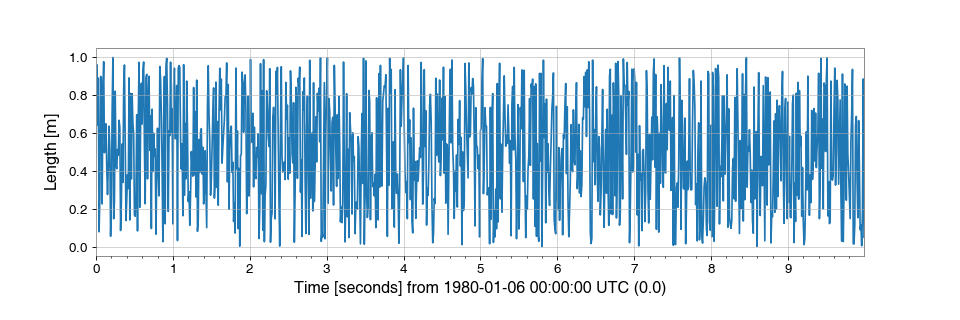
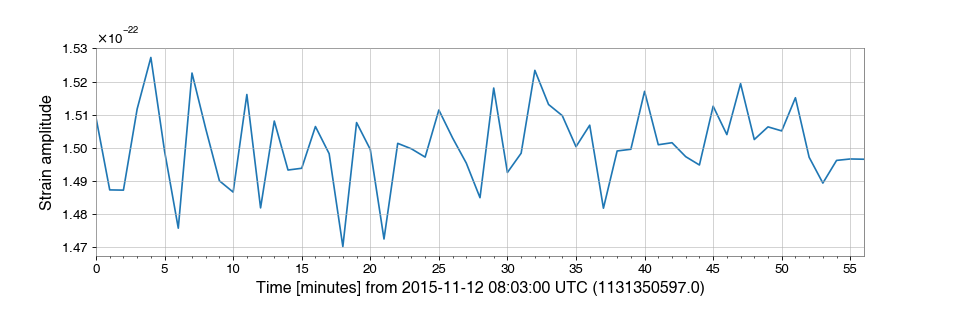
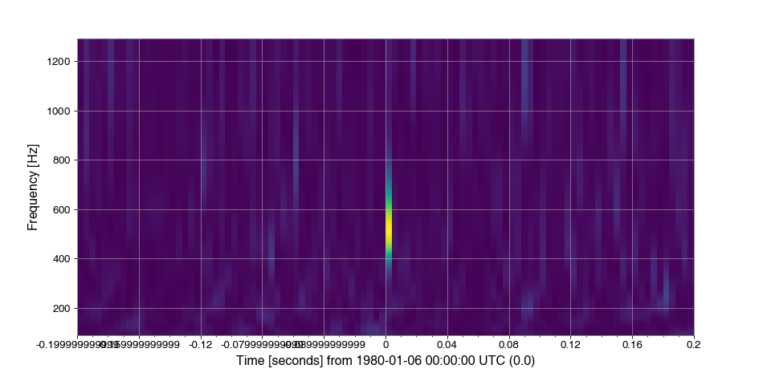

TimeSeries¶
-
class
gwpy.timeseries.TimeSeries[source]¶ Bases:
gwpy.timeseries.core.TimeSeriesBaseA time-domain data array.
Parameters: value : array-like
input data array
unit :
Unit, optionalphysical unit of these data
t0 :
LIGOTimeGPS,float,str, optionalGPS epoch associated with these data, any input parsable by
to_gpsis finedt :
float,Quantity, optionaltime between successive samples (seconds), can also be given inversely via
sample_ratesample_rate :
float,Quantity, optionalthe rate of samples per second (Hertz), can also be given inversely via
dttimes :
array-likename :
str, optionaldescriptive title for this array
channel :
Channel,str, optionalsource data stream for these data
dtype :
dtype, optionalinput data type
copy :
bool, optionalchoose to copy the input data to new memory
subok :
bool, optionalallow passing of sub-classes by the array generator
Notes
The necessary metadata to reconstruct timing information are recorded in the
epochandsample_rateattributes. This time-stamps can be returned via thetimesproperty.All comparison operations performed on a
TimeSerieswill return aStateTimeSeries- a boolean array with metadata copied from the startingTimeSeries.Examples
>>> from gwpy.timeseries import TimeSeries
To create an array of random numbers, sampled at 100 Hz, in units of ‘metres’:
>>> from numpy import random >>> series = TimeSeries(random.random(1000), sample_rate=100, unit='m')
which can then be simply visualised via
>>> plot = series.plot() >>> plot.show()
(png)
Attributes Summary
TSame as self.transpose(), except that self is returned if self.ndim < 2. baseBase object if memory is from some other object. cgsReturns a copy of the current Quantityinstance with CGS units.channelInstrumental channel associated with these data ctypesAn object to simplify the interaction of the array with the ctypes module. dataPython buffer object pointing to the start of the array’s data. dtX-axis sample separation dtypeData-type of the array’s elements. durationDuration of this series in seconds dxX-axis sample separation epochGPS epoch for these data. equivalenciesA list of equivalencies that will be applied by default during unit conversions. flagsInformation about the memory layout of the array. flatA 1-D iterator over the Quantity array. imagThe imaginary part of the array. infoContainer for meta information like name, description, format. isscalarTrue if the valueof this quantity is a scalar, or False if it is an array-like object.itemsizeLength of one array element in bytes. nameName for this data set nbytesTotal bytes consumed by the elements of the array. ndimNumber of array dimensions. realThe real part of the array. sample_rateData rate for this TimeSeriesin samples per second (Hertz).shapeTuple of array dimensions. siReturns a copy of the current Quantityinstance with SI units.sizeNumber of elements in the array. spanX-axis [low, high) segment encompassed by these data stridesTuple of bytes to step in each dimension when traversing an array. t0X-axis coordinate of the first data point timesPositions of the data on the x-axis unitThe physical unit of these data valueThe numerical value of this quantity. x0X-axis coordinate of the first data point xindexPositions of the data on the x-axis xspanX-axis [low, high) segment encompassed by these data xunitUnit of x-axis index Methods Summary
abs(x, /[, out, where, casting, order, …])Calculate the absolute value element-wise. all([axis, out, keepdims])Returns True if all elements evaluate to True. any([axis, out, keepdims])Returns True if any of the elements of aevaluate to True.append(other[, inplace, pad, gap, resize])Connect another series onto the end of the current one. argmax([axis, out])Return indices of the maximum values along the given axis. argmin([axis, out])Return indices of the minimum values along the given axis of a.argpartition(kth[, axis, kind, order])Returns the indices that would partition this array. argsort([axis, kind, order])Returns the indices that would sort this array. asd([fftlength, overlap, window, method])Calculate the ASD FrequencySeriesof thisTimeSeriesastype(dtype[, order, casting, subok, copy])Copy of the array, cast to a specified type. auto_coherence(dt[, fftlength, overlap, window])Calculate the frequency-coherence between this TimeSeriesand a time-shifted copy of itself.average_fft([fftlength, overlap, window])Compute the averaged one-dimensional DFT of this TimeSeries.bandpass(flow, fhigh[, gpass, gstop, fstop, …])Filter this TimeSerieswith a band-pass filter.byteswap([inplace])Swap the bytes of the array elements choose(choices[, out, mode])Use an index array to construct a new array from a set of choices. clip([min, max, out])Return an array whose values are limited to [min, max].coherence(other[, fftlength, overlap, window])Calculate the frequency-coherence between this TimeSeriesand another.coherence_spectrogram(other, stride[, …])Calculate the coherence spectrogram between this TimeSeriesand other.compress(condition[, axis, out])Return selected slices of this array along given axis. conj()Complex-conjugate all elements. conjugate()Return the complex conjugate, element-wise. copy([order])Return a copy of the array. crop([start, end, copy])Crop this series to the given x-axis extent. csd(other[, fftlength, overlap, window])Calculate the CSD FrequencySeriesfor twoTimeSeriescsd_spectrogram(other, stride[, fftlength, …])Calculate the cross spectral density spectrogram of this cumprod([axis, dtype, out])Return the cumulative product of the elements along the given axis. cumsum([axis, dtype, out])Return the cumulative sum of the elements along the given axis. decompose([bases])Generates a new Quantitywith the units decomposed.demodulate(f[, stride, exp, deg])Compute the average magnitude and phase of this TimeSeriesonce per stride at a given frequency.detrend([detrend])Remove the trend from this TimeSeriesdiagonal([offset, axis1, axis2])Return specified diagonals. diff([n, axis])Calculate the n-th order discrete difference along given axis. dot(b[, out])Dot product of two arrays. dump(file)Dump a pickle of the array to the specified file. dumps()Returns the pickle of the array as a string. ediff1d([to_end, to_begin])fetch(channel, start, end[, host, port, …])Fetch data from NDS fetch_open_data(ifo, start, end[, …])Fetch open-access data from the LIGO Open Science Center fft([nfft])Compute the one-dimensional discrete Fourier transform of this TimeSeries.fftgram(fftlength[, overlap, window])Calculate the Fourier-gram of this TimeSeries.fill(value)Fill the array with a scalar value. filter(*filt, **kwargs)Filter this TimeSerieswith an IIR or FIR filterfind(channel, start, end[, frametype, pad, …])Find and read data from frames for a channel flatten([order])Return a copy of the array collapsed into one dimension. from_lal(lalts[, copy])Generate a new TimeSeries from a LAL TimeSeries of any type. from_nds2_buffer(buffer_[, scaled, copy])Construct a new series from an nds2.bufferobjectfrom_pycbc(pycbcseries[, copy])Convert a pycbc.types.timeseries.TimeSeriesinto aTimeSeriesget(channel, start, end[, pad, scaled, …])Get data for this channel from frames or NDS getfield(dtype[, offset])Returns a field of the given array as a certain type. highpass(frequency[, gpass, gstop, fstop, …])Filter this TimeSerieswith a high-pass filter.inject(other)Add two compatible Seriesalong their shared x-axis values.insert(obj, values[, axis])Insert values along the given axis before the given indices and return a new Quantityobject.is_compatible(other)Check whether this series and other have compatible metadata is_contiguous(other[, tol])Check whether other is contiguous with self. item(*args)Copy an element of an array to a standard Python scalar and return it. itemset(*args)Insert scalar into an array (scalar is cast to array’s dtype, if possible) lowpass(frequency[, gpass, gstop, fstop, …])Filter this TimeSerieswith a Butterworth low-pass filter.max([axis, out, keepdims])Return the maximum along a given axis. mean([axis, dtype, out, keepdims])Returns the average of the array elements along given axis. median([axis])Compute the median along the specified axis. min([axis, out, keepdims])Return the minimum along a given axis. nansum([axis, out, keepdims])newbyteorder([new_order])Return the array with the same data viewed with a different byte order. nonzero()Return the indices of the elements that are non-zero. notch(frequency[, type, filtfilt])Notch out a frequency in this TimeSeries.override_unit(unit[, parse_strict])Forcefully reset the unit of these data pad(pad_width, **kwargs)Pad this series to a new size partition(kth[, axis, kind, order])Rearranges the elements in the array in such a way that value of the element in kth position is in the position it would be in a sorted array. plot([method, figsize, xscale])Plot the data for this timeseries prepend(other[, inplace, pad, gap, resize])Connect another series onto the start of the current one. prod([axis, dtype, out, keepdims])Return the product of the array elements over the given axis psd([fftlength, overlap, window, method])Calculate the PSD FrequencySeriesfor thisTimeSeriesptp([axis, out])Peak to peak (maximum - minimum) value along a given axis. put(indices, values[, mode])Set a.flat[n] = values[n]for allnin indices.q_transform([qrange, frange, gps, search, …])Scan a TimeSeriesusing the multi-Q transform and return an interpolated high-resolution spectrogramravel([order])Return a flattened array. rayleigh_spectrogram(stride[, fftlength, …])Calculate the Rayleigh statistic spectrogram of this TimeSeriesrayleigh_spectrum([fftlength, overlap])Calculate the Rayleigh FrequencySeriesfor thisTimeSeries.read(source, *args, **kwargs)Read data into a TimeSeriesrepeat(repeats[, axis])Repeat elements of an array. resample(rate[, window, ftype, n])Resample this Series to a new rate reshape(shape[, order])Returns an array containing the same data with a new shape. resize(new_shape[, refcheck])Change shape and size of array in-place. rms([stride])Calculate the root-mean-square value of this TimeSeriesonce per stride.round([decimals, out])Return awith each element rounded to the given number of decimals.searchsorted(v[, side, sorter])Find indices where elements of v should be inserted in a to maintain order. setfield(val, dtype[, offset])Put a value into a specified place in a field defined by a data-type. setflags([write, align, uic])Set array flags WRITEABLE, ALIGNED, (WRITEBACKIFCOPY and UPDATEIFCOPY), respectively. shift(delta)Shift this Seriesforward on the X-axis bydeltasort([axis, kind, order])Sort an array, in-place. spectral_variance(stride[, fftlength, …])Calculate the SpectralVarianceof thisTimeSeries.spectrogram(stride[, fftlength, overlap, …])Calculate the average power spectrogram of this TimeSeriesusing the specified average spectrum method.spectrogram2(fftlength[, overlap, window])Calculate the non-averaged power Spectrogramof thisTimeSeriessqueeze([axis])Remove single-dimensional entries from the shape of a.std([axis, dtype, out, ddof, keepdims])Returns the standard deviation of the array elements along given axis. step(**kwargs)Create a step plot of this series sum([axis, dtype, out, keepdims])Return the sum of the array elements over the given axis. swapaxes(axis1, axis2)Return a view of the array with axis1andaxis2interchanged.take(indices[, axis, out, mode])Return an array formed from the elements of aat the given indices.taper([side])Taper the ends of this TimeSeriessmoothly to zero.to(unit[, equivalencies])Returns a new Quantityobject with the specified units.to_lal()Convert this TimeSeriesinto a LAL TimeSeries.to_pycbc([copy])Convert this TimeSeriesinto a PyCBCTimeSeriestobytes([order])Construct Python bytes containing the raw data bytes in the array. tofile(fid[, sep, format])Write array to a file as text or binary (default). tolist()Return the array as a (possibly nested) list. tostring([order])Construct Python bytes containing the raw data bytes in the array. trace([offset, axis1, axis2, dtype, out])Return the sum along diagonals of the array. transpose(*axes)Returns a view of the array with axes transposed. update(other[, inplace])Update this series by appending new data from an other and dropping the same amount of data off the start. value_at(x)Return the value of this Seriesat the givenxindexvaluevar([axis, dtype, out, ddof, keepdims])Returns the variance of the array elements, along given axis. view([dtype, type])New view of array with the same data. whiten([fftlength, overlap, method, window, …])Whiten this TimeSeriesusing inverse spectrum truncationwrite(target, *args, **kwargs)Write this TimeSeriesto a filezip()Zip the xindexandvaluearrays of thisSerieszpk(zeros, poles, gain[, analog])Filter this TimeSeriesby applying a zero-pole-gain filterAttributes Documentation
-
T¶ Same as self.transpose(), except that self is returned if self.ndim < 2.
Examples
>>> x = np.array([[1.,2.],[3.,4.]]) >>> x array([[ 1., 2.], [ 3., 4.]]) >>> x.T array([[ 1., 3.], [ 2., 4.]]) >>> x = np.array([1.,2.,3.,4.]) >>> x array([ 1., 2., 3., 4.]) >>> x.T array([ 1., 2., 3., 4.])
-
base¶ Base object if memory is from some other object.
Examples
The base of an array that owns its memory is None:
>>> x = np.array([1,2,3,4]) >>> x.base is None True
Slicing creates a view, whose memory is shared with x:
>>> y = x[2:] >>> y.base is x True
-
cgs¶ Returns a copy of the current
Quantityinstance with CGS units. The value of the resulting object will be scaled.
-
ctypes¶ An object to simplify the interaction of the array with the ctypes module.
This attribute creates an object that makes it easier to use arrays when calling shared libraries with the ctypes module. The returned object has, among others, data, shape, and strides attributes (see Notes below) which themselves return ctypes objects that can be used as arguments to a shared library.
Parameters: - None
Returns: c : Python object
Possessing attributes data, shape, strides, etc.
See also
Notes
Below are the public attributes of this object which were documented in “Guide to NumPy” (we have omitted undocumented public attributes, as well as documented private attributes):
- data: A pointer to the memory area of the array as a Python integer. This memory area may contain data that is not aligned, or not in correct byte-order. The memory area may not even be writeable. The array flags and data-type of this array should be respected when passing this attribute to arbitrary C-code to avoid trouble that can include Python crashing. User Beware! The value of this attribute is exactly the same as self._array_interface_[‘data’][0].
- shape (c_intp*self.ndim): A ctypes array of length self.ndim where the basetype is the C-integer corresponding to dtype(‘p’) on this platform. This base-type could be c_int, c_long, or c_longlong depending on the platform. The c_intp type is defined accordingly in numpy.ctypeslib. The ctypes array contains the shape of the underlying array.
- strides (c_intp*self.ndim): A ctypes array of length self.ndim where the basetype is the same as for the shape attribute. This ctypes array contains the strides information from the underlying array. This strides information is important for showing how many bytes must be jumped to get to the next element in the array.
- data_as(obj): Return the data pointer cast to a particular c-types object. For example, calling self._as_parameter_ is equivalent to self.data_as(ctypes.c_void_p). Perhaps you want to use the data as a pointer to a ctypes array of floating-point data: self.data_as(ctypes.POINTER(ctypes.c_double)).
- shape_as(obj): Return the shape tuple as an array of some other c-types type. For example: self.shape_as(ctypes.c_short).
- strides_as(obj): Return the strides tuple as an array of some other c-types type. For example: self.strides_as(ctypes.c_longlong).
Be careful using the ctypes attribute - especially on temporary arrays or arrays constructed on the fly. For example, calling
(a+b).ctypes.data_as(ctypes.c_void_p)returns a pointer to memory that is invalid because the array created as (a+b) is deallocated before the next Python statement. You can avoid this problem using eitherc=a+borct=(a+b).ctypes. In the latter case, ct will hold a reference to the array until ct is deleted or re-assigned.If the ctypes module is not available, then the ctypes attribute of array objects still returns something useful, but ctypes objects are not returned and errors may be raised instead. In particular, the object will still have the as parameter attribute which will return an integer equal to the data attribute.
Examples
>>> import ctypes >>> x array([[0, 1], [2, 3]]) >>> x.ctypes.data 30439712 >>> x.ctypes.data_as(ctypes.POINTER(ctypes.c_long)) <ctypes.LP_c_long object at 0x01F01300> >>> x.ctypes.data_as(ctypes.POINTER(ctypes.c_long)).contents c_long(0) >>> x.ctypes.data_as(ctypes.POINTER(ctypes.c_longlong)).contents c_longlong(4294967296L) >>> x.ctypes.shape <numpy.core._internal.c_long_Array_2 object at 0x01FFD580> >>> x.ctypes.shape_as(ctypes.c_long) <numpy.core._internal.c_long_Array_2 object at 0x01FCE620> >>> x.ctypes.strides <numpy.core._internal.c_long_Array_2 object at 0x01FCE620> >>> x.ctypes.strides_as(ctypes.c_longlong) <numpy.core._internal.c_longlong_Array_2 object at 0x01F01300>
-
data¶ Python buffer object pointing to the start of the array’s data.
-
dtype¶ Data-type of the array’s elements.
Parameters: - None
Returns: - d : numpy dtype object
See also
Examples
>>> x array([[0, 1], [2, 3]]) >>> x.dtype dtype('int32') >>> type(x.dtype) <type 'numpy.dtype'>
-
equivalencies¶ A list of equivalencies that will be applied by default during unit conversions.
-
flags¶ Information about the memory layout of the array.
Notes
The
flagsobject can be accessed dictionary-like (as ina.flags['WRITEABLE']), or by using lowercased attribute names (as ina.flags.writeable). Short flag names are only supported in dictionary access.Only the WRITEBACKIFCOPY, UPDATEIFCOPY, WRITEABLE, and ALIGNED flags can be changed by the user, via direct assignment to the attribute or dictionary entry, or by calling
ndarray.setflags.The array flags cannot be set arbitrarily:
- UPDATEIFCOPY can only be set
False. - WRITEBACKIFCOPY can only be set
False. - ALIGNED can only be set
Trueif the data is truly aligned. - WRITEABLE can only be set
Trueif the array owns its own memory or the ultimate owner of the memory exposes a writeable buffer interface or is a string.
Arrays can be both C-style and Fortran-style contiguous simultaneously. This is clear for 1-dimensional arrays, but can also be true for higher dimensional arrays.
Even for contiguous arrays a stride for a given dimension
arr.strides[dim]may be arbitrary ifarr.shape[dim] == 1or the array has no elements. It does not generally hold thatself.strides[-1] == self.itemsizefor C-style contiguous arrays orself.strides[0] == self.itemsizefor Fortran-style contiguous arrays is true.Attributes: C_CONTIGUOUS (C)
The data is in a single, C-style contiguous segment.
F_CONTIGUOUS (F)
The data is in a single, Fortran-style contiguous segment.
OWNDATA (O)
The array owns the memory it uses or borrows it from another object.
WRITEABLE (W)
The data area can be written to. Setting this to False locks the data, making it read-only. A view (slice, etc.) inherits WRITEABLE from its base array at creation time, but a view of a writeable array may be subsequently locked while the base array remains writeable. (The opposite is not true, in that a view of a locked array may not be made writeable. However, currently, locking a base object does not lock any views that already reference it, so under that circumstance it is possible to alter the contents of a locked array via a previously created writeable view onto it.) Attempting to change a non-writeable array raises a RuntimeError exception.
ALIGNED (A)
The data and all elements are aligned appropriately for the hardware.
WRITEBACKIFCOPY (X)
This array is a copy of some other array. The C-API function PyArray_ResolveWritebackIfCopy must be called before deallocating to the base array will be updated with the contents of this array.
UPDATEIFCOPY (U)
(Deprecated, use WRITEBACKIFCOPY) This array is a copy of some other array. When this array is deallocated, the base array will be updated with the contents of this array.
FNC
F_CONTIGUOUS and not C_CONTIGUOUS.
FORC
F_CONTIGUOUS or C_CONTIGUOUS (one-segment test).
BEHAVED (B)
ALIGNED and WRITEABLE.
CARRAY (CA)
BEHAVED and C_CONTIGUOUS.
FARRAY (FA)
BEHAVED and F_CONTIGUOUS and not C_CONTIGUOUS.
- UPDATEIFCOPY can only be set
-
flat¶ A 1-D iterator over the Quantity array.
This returns a
QuantityIteratorinstance, which behaves the same as theflatiterinstance returned byflat, and is similar to, but not a subclass of, Python’s built-in iterator object.
-
imag¶ The imaginary part of the array.
Examples
>>> x = np.sqrt([1+0j, 0+1j]) >>> x.imag array([ 0. , 0.70710678]) >>> x.imag.dtype dtype('float64')
-
info¶ Container for meta information like name, description, format. This is required when the object is used as a mixin column within a table, but can be used as a general way to store meta information.
-
isscalar¶ True if the
valueof this quantity is a scalar, or False if it is an array-like object.Note
This is subtly different from
numpy.isscalarin thatnumpy.isscalarreturns False for a zero-dimensional array (e.g.np.array(1)), while this is True for quantities, since quantities cannot represent true numpy scalars.
-
itemsize¶ Length of one array element in bytes.
Examples
>>> x = np.array([1,2,3], dtype=np.float64) >>> x.itemsize 8 >>> x = np.array([1,2,3], dtype=np.complex128) >>> x.itemsize 16
-
nbytes¶ Total bytes consumed by the elements of the array.
Notes
Does not include memory consumed by non-element attributes of the array object.
Examples
>>> x = np.zeros((3,5,2), dtype=np.complex128) >>> x.nbytes 480 >>> np.prod(x.shape) * x.itemsize 480
-
ndim¶ Number of array dimensions.
Examples
>>> x = np.array([1, 2, 3]) >>> x.ndim 1 >>> y = np.zeros((2, 3, 4)) >>> y.ndim 3
-
real¶ The real part of the array.
See also
numpy.real- equivalent function
Examples
>>> x = np.sqrt([1+0j, 0+1j]) >>> x.real array([ 1. , 0.70710678]) >>> x.real.dtype dtype('float64')
-
sample_rate¶ Data rate for this
TimeSeriesin samples per second (Hertz).This attribute is stored internally by the
dxattributeType: Quantityscalar
-
shape¶ Tuple of array dimensions.
The shape property is usually used to get the current shape of an array, but may also be used to reshape the array in-place by assigning a tuple of array dimensions to it. As with
numpy.reshape, one of the new shape dimensions can be -1, in which case its value is inferred from the size of the array and the remaining dimensions. Reshaping an array in-place will fail if a copy is required.See also
numpy.reshape- similar function
ndarray.reshape- similar method
Examples
>>> x = np.array([1, 2, 3, 4]) >>> x.shape (4,) >>> y = np.zeros((2, 3, 4)) >>> y.shape (2, 3, 4) >>> y.shape = (3, 8) >>> y array([[ 0., 0., 0., 0., 0., 0., 0., 0.], [ 0., 0., 0., 0., 0., 0., 0., 0.], [ 0., 0., 0., 0., 0., 0., 0., 0.]]) >>> y.shape = (3, 6) Traceback (most recent call last): File "<stdin>", line 1, in <module> ValueError: total size of new array must be unchanged >>> np.zeros((4,2))[::2].shape = (-1,) Traceback (most recent call last): File "<stdin>", line 1, in <module> AttributeError: incompatible shape for a non-contiguous array
-
si¶ Returns a copy of the current
Quantityinstance with SI units. The value of the resulting object will be scaled.
-
size¶ Number of elements in the array.
Equivalent to
np.prod(a.shape), i.e., the product of the array’s dimensions.Examples
>>> x = np.zeros((3, 5, 2), dtype=np.complex128) >>> x.size 30 >>> np.prod(x.shape) 30
-
strides¶ Tuple of bytes to step in each dimension when traversing an array.
The byte offset of element
(i[0], i[1], ..., i[n])in an arrayais:offset = sum(np.array(i) * a.strides)
A more detailed explanation of strides can be found in the “ndarray.rst” file in the NumPy reference guide.
See also
Notes
Imagine an array of 32-bit integers (each 4 bytes):
x = np.array([[0, 1, 2, 3, 4], [5, 6, 7, 8, 9]], dtype=np.int32)
This array is stored in memory as 40 bytes, one after the other (known as a contiguous block of memory). The strides of an array tell us how many bytes we have to skip in memory to move to the next position along a certain axis. For example, we have to skip 4 bytes (1 value) to move to the next column, but 20 bytes (5 values) to get to the same position in the next row. As such, the strides for the array
xwill be(20, 4).Examples
>>> y = np.reshape(np.arange(2*3*4), (2,3,4)) >>> y array([[[ 0, 1, 2, 3], [ 4, 5, 6, 7], [ 8, 9, 10, 11]], [[12, 13, 14, 15], [16, 17, 18, 19], [20, 21, 22, 23]]]) >>> y.strides (48, 16, 4) >>> y[1,1,1] 17 >>> offset=sum(y.strides * np.array((1,1,1))) >>> offset/y.itemsize 17
>>> x = np.reshape(np.arange(5*6*7*8), (5,6,7,8)).transpose(2,3,1,0) >>> x.strides (32, 4, 224, 1344) >>> i = np.array([3,5,2,2]) >>> offset = sum(i * x.strides) >>> x[3,5,2,2] 813 >>> offset / x.itemsize 813
-
value¶ The numerical value of this quantity.
Methods Documentation
-
abs(x, /, out=None, *, where=True, casting='same_kind', order='K', dtype=None, subok=True[, signature, extobj])[source]¶ Calculate the absolute value element-wise.
Parameters: x : array_like
Input array.
out : ndarray, None, or tuple of ndarray and None, optional
A location into which the result is stored. If provided, it must have a shape that the inputs broadcast to. If not provided or
None, a freshly-allocated array is returned. A tuple (possible only as a keyword argument) must have length equal to the number of outputs.where : array_like, optional
Values of True indicate to calculate the ufunc at that position, values of False indicate to leave the value in the output alone.
**kwargs
For other keyword-only arguments, see the ufunc docs.
Returns: absolute : ndarray
An ndarray containing the absolute value of each element in
x. For complex input,a + ib, the absolute value is .
.Examples
>>> x = np.array([-1.2, 1.2]) >>> np.absolute(x) array([ 1.2, 1.2]) >>> np.absolute(1.2 + 1j) 1.5620499351813308
Plot the function over
[-10, 10]:>>> import matplotlib.pyplot as plt
>>> x = np.linspace(start=-10, stop=10, num=101) >>> plt.plot(x, np.absolute(x)) >>> plt.show()
(png)

Plot the function over the complex plane:
>>> xx = x + 1j * x[:, np.newaxis] >>> plt.imshow(np.abs(xx), extent=[-10, 10, -10, 10], cmap='gray') >>> plt.show()
(png)

-
all(axis=None, out=None, keepdims=False)¶ Returns True if all elements evaluate to True.
Refer to
numpy.allfor full documentation.See also
numpy.all- equivalent function
-
any(axis=None, out=None, keepdims=False)¶ Returns True if any of the elements of
aevaluate to True.Refer to
numpy.anyfor full documentation.See also
numpy.any- equivalent function
-
append(other, inplace=True, pad=None, gap=None, resize=True)[source]¶ Connect another series onto the end of the current one.
Parameters: other :
Seriesanother series of the same type to connect to this one
inplace :
bool, optionalperform operation in-place, modifying current series, otherwise copy data and return new series, default:
TrueWarning
inplaceappend bypasses the reference check innumpy.ndarray.resize, so be carefully to only use this for arrays that haven’t been sharing their memory!pad :
float, optionalvalue with which to pad discontiguous series, by default gaps will result in a
ValueError.gap :
str, optionalaction to perform if there’s a gap between the other series and this one. One of
'raise'- raise aValueError'ignore'- remove gap and join data'pad'- pad gap with zeros
If
padis given and is notNone, the default is'pad', otherwise'raise'. Ifgap='pad'is given, the default forpadis0.resize :
bool, optionalresize this array to accommodate new data, otherwise shift the old data to the left (potentially falling off the start) and put the new data in at the end, default:
True.Returns: series :
Seriesa new series containing joined data sets
-
argmax(axis=None, out=None)¶ Return indices of the maximum values along the given axis.
Refer to
numpy.argmaxfor full documentation.See also
numpy.argmax- equivalent function
-
argmin(axis=None, out=None)¶ Return indices of the minimum values along the given axis of
a.Refer to
numpy.argminfor detailed documentation.See also
numpy.argmin- equivalent function
-
argpartition(kth, axis=-1, kind='introselect', order=None)¶ Returns the indices that would partition this array.
Refer to
numpy.argpartitionfor full documentation.New in version 1.8.0.
See also
numpy.argpartition- equivalent function
-
argsort(axis=-1, kind='quicksort', order=None)¶ Returns the indices that would sort this array.
Refer to
numpy.argsortfor full documentation.See also
numpy.argsort- equivalent function
-
asd(fftlength=None, overlap=None, window='hann', method='scipy-welch', **kwargs)[source]¶ Calculate the ASD
FrequencySeriesof thisTimeSeriesParameters: fftlength :
floatnumber of seconds in single FFT, defaults to a single FFT covering the full duration
overlap :
float, optionalnumber of seconds of overlap between FFTs, defaults to the recommended overlap for the given window (if given), or 0
window :
str,numpy.ndarray, optionalwindow function to apply to timeseries prior to FFT, see
scipy.signal.get_window()for details on acceptable formatsmethod :
str, optionalFFT-averaging method, default:
'scipy-welch', see Notes for more detailsReturns: psd :
FrequencySeriesa data series containing the PSD.
See also
Notes
The available methods are:
Method name Function welch gwpy.signal.fft.basic.welchbartlett gwpy.signal.fft.basic.bartlettmedian gwpy.signal.fft.basic.medianmedian_mean gwpy.signal.fft.basic.median_meanpycbc_welch gwpy.signal.fft.pycbc.welchpycbc_bartlett gwpy.signal.fft.pycbc.bartlettpycbc_median gwpy.signal.fft.pycbc.medianpycbc_median_mean gwpy.signal.fft.pycbc.median_meanlal_welch gwpy.signal.fft.lal.welchlal_bartlett gwpy.signal.fft.lal.bartlettlal_median gwpy.signal.fft.lal.medianlal_median_mean gwpy.signal.fft.lal.median_meanscipy_welch gwpy.signal.fft.scipy.welchscipy_bartlett gwpy.signal.fft.scipy.bartlettSee FFT routines for GWpy for more details
-
astype(dtype, order='K', casting='unsafe', subok=True, copy=True)¶ Copy of the array, cast to a specified type.
Parameters: dtype : str or dtype
Typecode or data-type to which the array is cast.
order : {‘C’, ‘F’, ‘A’, ‘K’}, optional
Controls the memory layout order of the result. ‘C’ means C order, ‘F’ means Fortran order, ‘A’ means ‘F’ order if all the arrays are Fortran contiguous, ‘C’ order otherwise, and ‘K’ means as close to the order the array elements appear in memory as possible. Default is ‘K’.
casting : {‘no’, ‘equiv’, ‘safe’, ‘same_kind’, ‘unsafe’}, optional
Controls what kind of data casting may occur. Defaults to ‘unsafe’ for backwards compatibility.
- ‘no’ means the data types should not be cast at all.
- ‘equiv’ means only byte-order changes are allowed.
- ‘safe’ means only casts which can preserve values are allowed.
- ‘same_kind’ means only safe casts or casts within a kind, like float64 to float32, are allowed.
- ‘unsafe’ means any data conversions may be done.
subok : bool, optional
If True, then sub-classes will be passed-through (default), otherwise the returned array will be forced to be a base-class array.
copy : bool, optional
By default, astype always returns a newly allocated array. If this is set to false, and the
dtype,order, andsubokrequirements are satisfied, the input array is returned instead of a copy.Returns: arr_t : ndarray
Raises: ComplexWarning
When casting from complex to float or int. To avoid this, one should use
a.real.astype(t).Notes
Starting in NumPy 1.9, astype method now returns an error if the string dtype to cast to is not long enough in ‘safe’ casting mode to hold the max value of integer/float array that is being casted. Previously the casting was allowed even if the result was truncated.
Examples
>>> x = np.array([1, 2, 2.5]) >>> x array([ 1. , 2. , 2.5])
>>> x.astype(int) array([1, 2, 2])
-
auto_coherence(dt, fftlength=None, overlap=None, window='hann', **kwargs)[source]¶ Calculate the frequency-coherence between this
TimeSeriesand a time-shifted copy of itself.The standard
TimeSeries.coherence()is calculated between the inputTimeSeriesand acroppedcopy of itself. Since the cropped version will be shorter, the input series will be shortened to match.Parameters: dt :
floatduration (in seconds) of time-shift
fftlength :
float, optionalnumber of seconds in single FFT, defaults to a single FFT covering the full duration
overlap :
float, optionalnumber of seconds of overlap between FFTs, defaults to the recommended overlap for the given window (if given), or 0
window :
str,numpy.ndarray, optionalwindow function to apply to timeseries prior to FFT, see
scipy.signal.get_window()for details on acceptable formats**kwargs
any other keyword arguments accepted by
matplotlib.mlab.cohere()exceptNFFT,window, andnoverlapwhich are superceded by the above keyword argumentsReturns: coherence :
FrequencySeriesthe coherence
FrequencySeriesof thisTimeSerieswith the otherSee also
matplotlib.mlab.cohere()- for details of the coherence calculator
Notes
The
TimeSeries.auto_coherence()will perform best whendtis approximatelyfftlength / 2.
-
average_fft(fftlength=None, overlap=0, window=None)[source]¶ Compute the averaged one-dimensional DFT of this
TimeSeries.This method computes a number of FFTs of duration
fftlengthandoverlap(both given in seconds), and returns the mean average. This method is analogous to the Welch average method for power spectra.Parameters: fftlength :
floatnumber of seconds in single FFT, default, use whole
TimeSeriesoverlap :
float, optionalnumber of seconds of overlap between FFTs, defaults to the recommended overlap for the given window (if given), or 0
window :
str,numpy.ndarray, optionalwindow function to apply to timeseries prior to FFT, see
scipy.signal.get_window()for details on acceptable formatsReturns: out : complex-valued
FrequencySeriesthe transformed output, with populated frequencies array metadata
See also
scipy.fftpack,used.
-
bandpass(flow, fhigh, gpass=2, gstop=30, fstop=None, type='iir', filtfilt=True, **kwargs)[source]¶ Filter this
TimeSerieswith a band-pass filter.Parameters: flow :
floatlower corner frequency of pass band
fhigh :
floatupper corner frequency of pass band
gpass :
floatthe maximum loss in the passband (dB).
gstop :
floatthe minimum attenuation in the stopband (dB).
fstop :
tupleoffloat, optional(low, high)edge-frequencies of stop bandtype :
strthe filter type, either
'iir'or'fir'**kwargs
other keyword arguments are passed to
gwpy.signal.filter_design.bandpass()Returns: bpseries :
TimeSeriesa band-passed version of the input
TimeSeriesSee also
gwpy.signal.filter_design.bandpass- for details on the filter design
TimeSeries.filter- for details on how the filter is applied
- When using
scipy < 0.16.0some higher-order filters may be unstable. Withscipy >= 0.16.0higher-order filters are decomposed into second-order-sections, and so are much more stable.
-
byteswap(inplace=False)¶ Swap the bytes of the array elements
Toggle between low-endian and big-endian data representation by returning a byteswapped array, optionally swapped in-place.
Parameters: inplace : bool, optional
If
True, swap bytes in-place, default isFalse.Returns: out : ndarray
The byteswapped array. If
inplaceisTrue, this is a view to self.Examples
>>> A = np.array([1, 256, 8755], dtype=np.int16) >>> map(hex, A) ['0x1', '0x100', '0x2233'] >>> A.byteswap(inplace=True) array([ 256, 1, 13090], dtype=int16) >>> map(hex, A) ['0x100', '0x1', '0x3322']
Arrays of strings are not swapped
>>> A = np.array(['ceg', 'fac']) >>> A.byteswap() array(['ceg', 'fac'], dtype='|S3')
-
choose(choices, out=None, mode='raise')¶ Use an index array to construct a new array from a set of choices.
Refer to
numpy.choosefor full documentation.See also
numpy.choose- equivalent function
-
clip(min=None, max=None, out=None)¶ Return an array whose values are limited to
[min, max]. One of max or min must be given.Refer to
numpy.clipfor full documentation.See also
numpy.clip- equivalent function
-
coherence(other, fftlength=None, overlap=None, window='hann', **kwargs)[source]¶ Calculate the frequency-coherence between this
TimeSeriesand another.Parameters: other :
TimeSeriesTimeSeriessignal to calculate coherence withfftlength :
float, optionalnumber of seconds in single FFT, defaults to a single FFT covering the full duration
overlap :
float, optionalnumber of seconds of overlap between FFTs, defaults to the recommended overlap for the given window (if given), or 0
window :
str,numpy.ndarray, optionalwindow function to apply to timeseries prior to FFT, see
scipy.signal.get_window()for details on acceptable formats**kwargs
any other keyword arguments accepted by
matplotlib.mlab.cohere()exceptNFFT,window, andnoverlapwhich are superceded by the above keyword argumentsReturns: coherence :
FrequencySeriesthe coherence
FrequencySeriesof thisTimeSerieswith the otherSee also
matplotlib.mlab.cohere()- for details of the coherence calculator
Notes
If
selfandotherhave differenceTimeSeries.sample_ratevalues, the higher sampledTimeSerieswill be down-sampled to match the lower.
-
coherence_spectrogram(other, stride, fftlength=None, overlap=None, window='hann', nproc=1)[source]¶ Calculate the coherence spectrogram between this
TimeSeriesand other.Parameters: other :
TimeSeriesthe second
TimeSeriesin this CSD calculationstride :
floatnumber of seconds in single PSD (column of spectrogram)
fftlength :
floatnumber of seconds in single FFT
overlap :
float, optionalnumber of seconds of overlap between FFTs, defaults to the recommended overlap for the given window (if given), or 0
window :
str,numpy.ndarray, optionalwindow function to apply to timeseries prior to FFT, see
scipy.signal.get_window()for details on acceptable formatsnproc :
intnumber of parallel processes to use when calculating individual coherence spectra.
Returns: spectrogram :
Spectrogramtime-frequency coherence spectrogram as generated from the input time-series.
-
compress(condition, axis=None, out=None)¶ Return selected slices of this array along given axis.
Refer to
numpy.compressfor full documentation.See also
numpy.compress- equivalent function
-
conj()¶ Complex-conjugate all elements.
Refer to
numpy.conjugatefor full documentation.See also
numpy.conjugate- equivalent function
-
conjugate()¶ Return the complex conjugate, element-wise.
Refer to
numpy.conjugatefor full documentation.See also
numpy.conjugate- equivalent function
-
copy(order='C')[source]¶ Return a copy of the array.
Parameters: order : {‘C’, ‘F’, ‘A’, ‘K’}, optional
Controls the memory layout of the copy. ‘C’ means C-order, ‘F’ means F-order, ‘A’ means ‘F’ if
ais Fortran contiguous, ‘C’ otherwise. ‘K’ means match the layout ofaas closely as possible. (Note that this function andnumpy.copy()are very similar, but have different default values for their order= arguments.)See also
Examples
>>> x = np.array([[1,2,3],[4,5,6]], order='F')
>>> y = x.copy()
>>> x.fill(0)
>>> x array([[0, 0, 0], [0, 0, 0]])
>>> y array([[1, 2, 3], [4, 5, 6]])
>>> y.flags['C_CONTIGUOUS'] True
-
crop(start=None, end=None, copy=False)[source]¶ Crop this series to the given x-axis extent.
Parameters: start :
float, optionallower limit of x-axis to crop to, defaults to current
x0end :
float, optionalupper limit of x-axis to crop to, defaults to current series end
copy :
bool, optional, default:Falsecopy the input data to fresh memory, otherwise return a view
Returns: series :
SeriesA new series with a sub-set of the input data
Notes
If either
startorendare outside of the originalSeriesspan, warnings will be printed and the limits will be restricted to thexspan
-
csd(other, fftlength=None, overlap=None, window='hann', **kwargs)[source]¶ Calculate the CSD
FrequencySeriesfor twoTimeSeriesParameters: other :
TimeSeriesthe second
TimeSeriesin this CSD calculationfftlength :
floatnumber of seconds in single FFT, defaults to a single FFT covering the full duration
overlap :
float, optionalnumber of seconds of overlap between FFTs, defaults to the recommended overlap for the given window (if given), or 0
window :
str,numpy.ndarray, optionalwindow function to apply to timeseries prior to FFT, see
scipy.signal.get_window()for details on acceptable formatsReturns: csd :
FrequencySeriesa data series containing the CSD.
-
csd_spectrogram(other, stride, fftlength=None, overlap=0, window='hann', nproc=1, **kwargs)[source]¶ - Calculate the cross spectral density spectrogram of this
TimeSerieswith ‘other’.
Parameters: other :
TimeSeriessecond time-series for cross spectral density calculation
stride :
floatnumber of seconds in single PSD (column of spectrogram).
fftlength :
floatnumber of seconds in single FFT.
overlap :
float, optionalnumber of seconds of overlap between FFTs, defaults to the recommended overlap for the given window (if given), or 0
window :
str,numpy.ndarray, optionalwindow function to apply to timeseries prior to FFT, see
scipy.signal.get_window()for details on acceptable formatsnproc :
intmaximum number of independent frame reading processes, default is set to single-process file reading.
Returns: spectrogram :
Spectrogramtime-frequency cross spectrogram as generated from the two input time-series.
-
cumprod(axis=None, dtype=None, out=None)¶ Return the cumulative product of the elements along the given axis.
Refer to
numpy.cumprodfor full documentation.See also
numpy.cumprod- equivalent function
-
cumsum(axis=None, dtype=None, out=None)¶ Return the cumulative sum of the elements along the given axis.
Refer to
numpy.cumsumfor full documentation.See also
numpy.cumsum- equivalent function
-
decompose(bases=[])¶ Generates a new
Quantitywith the units decomposed. Decomposed units have only irreducible units in them (seeastropy.units.UnitBase.decompose).Parameters: bases : sequence of UnitBase, optional
The bases to decompose into. When not provided, decomposes down to any irreducible units. When provided, the decomposed result will only contain the given units. This will raises a
UnitsErrorif it’s not possible to do so.Returns: newq :
QuantityA new object equal to this quantity with units decomposed.
-
demodulate(f, stride=1, exp=False, deg=True)[source]¶ Compute the average magnitude and phase of this
TimeSeriesonce per stride at a given frequency.Parameters: f :
floatfrequency (Hz) at which to demodulate the signal
stride :
float, optionalstride (seconds) between calculations, defaults to 1 second
exp :
bool, optionalreturn the magnitude and phase trends as one
TimeSeriesobject representing a complex exponential, default: Falsedeg :
bool, optionalif
exp=False, calculates the phase in degreesReturns: mag, phase :
TimeSeriesif
exp=False, returns a pair ofTimeSeriesobjects representing magnitude and phase trends withdt=strideout :
TimeSeriesif
exp=True, returns a singleTimeSerieswith magnitude and phase trends represented asmag * exp(1j*phase)withdt=strideExamples
Demodulation is useful when trying to examine steady sinusoidal signals we know to be contained within data. For instance, we can download some data from LOSC to look at trends of the amplitude and phase of LIGO Livingston’s calibration line at 331.3 Hz:
>>> from gwpy.timeseries import TimeSeries >>> data = TimeSeries.fetch_open_data('L1', 1131350417, 1131357617)
We can demodulate the
TimeSeriesat 331.3 Hz with a stride of one minute:>>> amp, phase = data.demodulate(331.3, stride=60)
We can then plot these trends to visualize fluctuations in the amplitude of the calibration line:
>>> from gwpy.plot import Plot >>> plot = Plot(amp) >>> ax = plot.gca() >>> ax.set_ylabel('Strain Amplitude at 331.3 Hz') >>> plot.show()
(png)
-
detrend(detrend='constant')[source]¶ Remove the trend from this
TimeSeriesThis method just wraps
scipy.signal.detrend()to return an object of the same type as the input.Parameters: detrend :
str, optionalthe type of detrending.
Returns: detrended :
TimeSeriesthe detrended input series
See also
scipy.signal.detrend- for details on the options for the
detrendargument, and how the operation is done
-
diagonal(offset=0, axis1=0, axis2=1)¶ Return specified diagonals. In NumPy 1.9 the returned array is a read-only view instead of a copy as in previous NumPy versions. In a future version the read-only restriction will be removed.
Refer to
numpy.diagonal()for full documentation.See also
numpy.diagonal- equivalent function
-
diff(n=1, axis=-1)[source]¶ Calculate the n-th order discrete difference along given axis.
The first order difference is given by
out[n] = a[n+1] - a[n]along the given axis, higher order differences are calculated by usingdiffrecursively.Parameters: n : int, optional
The number of times values are differenced.
axis : int, optional
The axis along which the difference is taken, default is the last axis.
Returns: diff :
SeriesThe
norder differences. The shape of the output is the same as the input, except alongaxiswhere the dimension is smaller byn.See also
numpy.diff- for documentation on the underlying method
-
dot(b, out=None)¶ Dot product of two arrays.
Refer to
numpy.dotfor full documentation.See also
numpy.dot- equivalent function
Examples
>>> a = np.eye(2) >>> b = np.ones((2, 2)) * 2 >>> a.dot(b) array([[ 2., 2.], [ 2., 2.]])
This array method can be conveniently chained:
>>> a.dot(b).dot(b) array([[ 8., 8.], [ 8., 8.]])
-
dump(file)¶ Dump a pickle of the array to the specified file. The array can be read back with pickle.load or numpy.load.
Parameters: file : str
A string naming the dump file.
-
dumps()[source]¶ Returns the pickle of the array as a string. pickle.loads or numpy.loads will convert the string back to an array.
Parameters: - None
-
ediff1d(to_end=None, to_begin=None)¶
-
classmethod
fetch(channel, start, end, host=None, port=None, verbose=False, connection=None, verify=False, pad=None, allow_tape=None, scaled=True, type=None, dtype=None)[source]¶ Fetch data from NDS
Parameters: the data channel for which to query
start :
LIGOTimeGPS,float,strGPS start time of required data, any input parseable by
to_gpsis fineGPS end time of required data, any input parseable by
to_gpsis finehost :
str, optionalURL of NDS server to use, if blank will try any server (in a relatively sensible order) to get the data
port :
int, optionalport number for NDS server query, must be given with
hostverify :
bool, optional, default:Falsecheck channels exist in database before asking for data
scaled :
bool, optionalapply slope and bias calibration to ADC data, for non-ADC data this option has no effect
connection :
nds2.connection, optionalopen NDS connection to use
verbose :
bool, optionalprint verbose output about NDS progress, useful for debugging; if
verboseis specified as a string, this defines the prefix for the progress metertype :
int, optionalNDS2 channel type integer
dtype :
type,numpy.dtype,str, optionalidentifier for desired output data type
-
classmethod
fetch_open_data(ifo, start, end, sample_rate=4096, tag=None, version=None, format='hdf5', host='https://losc.ligo.org', verbose=False, cache=None, **kwargs)[source]¶ Fetch open-access data from the LIGO Open Science Center
Parameters: ifo :
strthe two-character prefix of the IFO in which you are interested, e.g.
'L1'start :
LIGOTimeGPS,float,str, optionalGPS start time of required data, defaults to start of data found; any input parseable by
to_gpsis fineend :
LIGOTimeGPS,float,str, optionalGPS end time of required data, defaults to end of data found; any input parseable by
to_gpsis finesample_rate :
float, optional,the sample rate of desired data; most data are stored by LOSC at 4096 Hz, however there may be event-related data releases with a 16384 Hz rate, default:
4096tag :
str, optionalfile tag, e.g.
'CLN'to select cleaned data, or'C00'for ‘raw’ calibrated data.version :
int, optionalversion of files to download, defaults to highest discovered version
format :
str, optionalthe data format to download and parse, default:
'h5py''hdf5''gwf'- requiresLDAStools.frameCPP
host :
str, optionalHTTP host name of LOSC server to access
verbose :
bool, optional, default:Falseprint verbose output while fetching data
cache :
bool, optionalsave/read a local copy of the remote URL, default:
False; useful if the same remote data are to be accessed multiple times. SetGWPY_CACHE=1in the environment to auto-cache.**kwargs
any other keyword arguments are passed to the
TimeSeries.readmethod that parses the file that was downloadedNotes
StateVectordata are not available intxt.gzformat.Examples
>>> from gwpy.timeseries import (TimeSeries, StateVector) >>> print(TimeSeries.fetch_open_data('H1', 1126259446, 1126259478)) TimeSeries([ 2.17704028e-19, 2.08763900e-19, 2.39681183e-19, ..., 3.55365541e-20, 6.33533516e-20, 7.58121195e-20] unit: Unit(dimensionless), t0: 1126259446.0 s, dt: 0.000244140625 s, name: Strain, channel: None) >>> print(StateVector.fetch_open_data('H1', 1126259446, 1126259478)) StateVector([127,127,127,127,127,127,127,127,127,127,127,127, 127,127,127,127,127,127,127,127,127,127,127,127, 127,127,127,127,127,127,127,127] unit: Unit(dimensionless), t0: 1126259446.0 s, dt: 1.0 s, name: Data quality, channel: None, bits: Bits(0: data present 1: passes cbc CAT1 test 2: passes cbc CAT2 test 3: passes cbc CAT3 test 4: passes burst CAT1 test 5: passes burst CAT2 test 6: passes burst CAT3 test, channel=None, epoch=1126259446.0))
For the
StateVector, the naming of the bits will beformat-dependent, because they are recorded differently by LOSC in different formats.For events published in O2 and later, LOSC typically provides multiple data sets containing the original (
'C00') and cleaned ('CLN') data. To select both data sets and plot a comparison, for example:>>> orig = TimeSeries.fetch_open_data('H1', 1187008870, 1187008896, ... tag='C00') >>> cln = TimeSeries.fetch_open_data('H1', 1187008870, 1187008896, ... tag='CLN') >>> origasd = orig.asd(fftlength=4, overlap=2) >>> clnasd = cln.asd(fftlength=4, overlap=2) >>> plot = origasd.plot(label='Un-cleaned') >>> ax = plot.gca() >>> ax.plot(clnasd, label='Cleaned') >>> ax.set_xlim(10, 1400) >>> ax.set_ylim(1e-24, 1e-20) >>> ax.legend() >>> plot.show()
(png)

-
fft(nfft=None)[source]¶ Compute the one-dimensional discrete Fourier transform of this
TimeSeries.Parameters: nfft :
int, optionallength of the desired Fourier transform, input will be cropped or padded to match the desired length. If nfft is not given, the length of the
TimeSerieswill be usedReturns: out :
FrequencySeriesthe normalised, complex-valued FFT
FrequencySeries.See also
scipy.fftpack,used.Notes
This method, in constrast to the
numpy.fft.rfft()method it calls, applies the necessary normalisation such that the amplitude of the outputFrequencySeriesis correct.
-
fftgram(fftlength, overlap=None, window='hann', **kwargs)[source]¶ Calculate the Fourier-gram of this
TimeSeries.At every
stride, a single, complex FFT is calculated.Parameters: fftlength :
floatnumber of seconds in single FFT.
overlap :
float, optionalnumber of seconds of overlap between FFTs, defaults to the recommended overlap for the given window (if given), or 0
window :
str,numpy.ndarray, optionalwindow function to apply to timeseries prior to FFT, see
scipy.signal.get_window()for details on acceptableReturns: - a Fourier-gram
-
fill(value)¶ Fill the array with a scalar value.
Parameters: value : scalar
All elements of
awill be assigned this value.Examples
>>> a = np.array([1, 2]) >>> a.fill(0) >>> a array([0, 0]) >>> a = np.empty(2) >>> a.fill(1) >>> a array([ 1., 1.])
-
filter(*filt, **kwargs)[source]¶ Filter this
TimeSerieswith an IIR or FIR filterParameters: *filt : filter arguments
filtfilt :
bool, optionalfilter forward and backwards to preserve phase, default:
Falseanalog :
bool, optionalinplace :
bool, optional**kwargs
other keyword arguments are passed to the filter method
Returns: result :
TimeSeriesthe filtered version of the input
TimeSeriesRaises: ValueError
if
filtarguments cannot be interpreted properlySee also
scipy.signal.sosfilt- for details on filtering with second-order sections (
scipy >= 0.16only) scipy.signal.sosfiltfilt- for details on forward-backward filtering with second-order sections (
scipy >= 0.18only) scipy.signal.lfilter- for details on filtering (without SOS)
scipy.signal.filtfilt- for details on forward-backward filtering (without SOS)
Notes
IIR filters are converted either into cascading second-order sections (if
scipy >= 0.16is installed), or into the(numerator, denominator)representation before being applied to thisTimeSeries.Note
When using
scipy < 0.16some higher-order filters may be unstable. Withscipy >= 0.16higher-order filters are decomposed into second-order-sections, and so are much more stable.FIR filters are passed directly to
scipy.signal.lfilter()orscipy.signal.filtfilt()without any conversions.Examples
We can design an arbitrarily complicated filter using
gwpy.signal.filter_design>>> from gwpy.signal import filter_design >>> bp = filter_design.bandpass(50, 250, 4096.) >>> notches = [filter_design.notch(f, 4096.) for f in (60, 120, 180)] >>> zpk = filter_design.concatenate_zpks(bp, *notches)
And then can download some data from LOSC to apply it using
TimeSeries.filter:>>> from gwpy.timeseries import TimeSeries >>> data = TimeSeries.fetch_open_data('H1', 1126259446, 1126259478) >>> filtered = data.filter(zpk, filtfilt=True)
We can plot the original signal, and the filtered version, cutting off either end of the filtered data to remove filter-edge artefacts
>>> from gwpy.plot import Plot >>> plot = Plot(data, filtered[128:-128], separate=True) >>> plot.show()
(png)

-
classmethod
find(channel, start, end, frametype=None, pad=None, scaled=True, dtype=None, nproc=1, verbose=False, **readargs)[source]¶ Find and read data from frames for a channel
Parameters: the name of the channel to read, or a
Channelobject.start :
LIGOTimeGPS,float,strGPS start time of required data, any input parseable by
to_gpsis fineGPS end time of required data, any input parseable by
to_gpsis fineframetype :
str, optionalname of frametype in which this channel is stored, will search for containing frame types if necessary
pad :
float, optionalvalue with which to fill gaps in the source data, by default gaps will result in a
ValueError.scaled :
bool, optionalapply slope and bias calibration to ADC data, for non-ADC data this option has no effect.
nproc :
int, optional, default:1number of parallel processes to use, serial process by default.
dtype :
numpy.dtype,str,type, ordictallow_tape :
bool, optional, default:Trueallow reading from frame files on (slow) magnetic tape
verbose :
bool, optionalprint verbose output about read progress, if
verboseis specified as a string, this defines the prefix for the progress meter**readargs
any other keyword arguments to be passed to
read()
-
flatten(order='C')[source]¶ Return a copy of the array collapsed into one dimension.
Any index information is removed as part of the flattening, and the result is returned as a
Quantityarray.Parameters: order : {‘C’, ‘F’, ‘A’, ‘K’}, optional
‘C’ means to flatten in row-major (C-style) order. ‘F’ means to flatten in column-major (Fortran- style) order. ‘A’ means to flatten in column-major order if
ais Fortran contiguous in memory, row-major order otherwise. ‘K’ means to flattenain the order the elements occur in memory. The default is ‘C’.Returns: y :
QuantityA copy of the input array, flattened to one dimension.
Examples
>>> a = Array([[1,2], [3,4]], unit='m', name='Test') >>> a.flatten() <Quantity [1., 2., 3., 4.] m>
-
classmethod
from_lal(lalts, copy=True)[source]¶ Generate a new TimeSeries from a LAL TimeSeries of any type.
-
classmethod
from_nds2_buffer(buffer_, scaled=True, copy=True, **metadata)[source]¶ Construct a new series from an
nds2.bufferobjectRequires:
nds2Parameters: buffer_ :
nds2.bufferthe input NDS2-client buffer to read
scaled :
bool, optionalapply slope and bias calibration to ADC data, for non-ADC data this option has no effect
copy :
bool, optionalif
True, copy the contained data array to new to a new array**metadata
any other metadata keyword arguments to pass to the
TimeSeriesconstructorReturns: timeseries :
TimeSeriesa new
TimeSeriescontaining the data from thends2.buffer, and the appropriate metadata
-
classmethod
from_pycbc(pycbcseries, copy=True)[source]¶ Convert a
pycbc.types.timeseries.TimeSeriesinto aTimeSeriesParameters: pycbcseries :
pycbc.types.timeseries.TimeSeriesthe input PyCBC
TimeSeriesarraycopy :
bool, optional, default:Trueif
True, copy these data to a new arrayReturns: timeseries :
TimeSeriesa GWpy version of the input timeseries
-
classmethod
get(channel, start, end, pad=None, scaled=True, dtype=None, verbose=False, allow_tape=None, **kwargs)[source]¶ Get data for this channel from frames or NDS
This method dynamically accesses either frames on disk, or a remote NDS2 server to find and return data for the given interval
Parameters: the name of the channel to read, or a
Channelobject.start :
LIGOTimeGPS,float,strGPS start time of required data, any input parseable by
to_gpsis fineGPS end time of required data, any input parseable by
to_gpsis finepad :
float, optionalvalue with which to fill gaps in the source data, by default gaps will result in a
ValueError.scaled :
bool, optionalapply slope and bias calibration to ADC data, for non-ADC data this option has no effect
dtype :
numpy.dtype,str,type, ordictnproc :
int, optional, default:1number of parallel processes to use, serial process by default.
allow_tape :
bool, optional, default:Noneallow the use of frames that are held on tape, default is
Noneto attempt to allow theTimeSeries.fetchmethod to intelligently select a server that doesn’t use tapes for data storage (doesn’t always work), but to eventually allow retrieving data from tape if requiredverbose :
bool, optionalprint verbose output about data access progress, if
verboseis specified as a string, this defines the prefix for the progress meter**kwargs
See also
TimeSeries.fetch- for grabbing data from a remote NDS2 server
TimeSeries.find- for discovering and reading data from local GWF files
-
getfield(dtype, offset=0)¶ Returns a field of the given array as a certain type.
A field is a view of the array data with a given data-type. The values in the view are determined by the given type and the offset into the current array in bytes. The offset needs to be such that the view dtype fits in the array dtype; for example an array of dtype complex128 has 16-byte elements. If taking a view with a 32-bit integer (4 bytes), the offset needs to be between 0 and 12 bytes.
Parameters: dtype : str or dtype
The data type of the view. The dtype size of the view can not be larger than that of the array itself.
offset : int
Number of bytes to skip before beginning the element view.
Examples
>>> x = np.diag([1.+1.j]*2) >>> x[1, 1] = 2 + 4.j >>> x array([[ 1.+1.j, 0.+0.j], [ 0.+0.j, 2.+4.j]]) >>> x.getfield(np.float64) array([[ 1., 0.], [ 0., 2.]])
By choosing an offset of 8 bytes we can select the complex part of the array for our view:
>>> x.getfield(np.float64, offset=8) array([[ 1., 0.], [ 0., 4.]])
-
highpass(frequency, gpass=2, gstop=30, fstop=None, type='iir', filtfilt=True, **kwargs)[source]¶ Filter this
TimeSerieswith a high-pass filter.Parameters: frequency :
floathigh-pass corner frequency
gpass :
floatthe maximum loss in the passband (dB).
gstop :
floatthe minimum attenuation in the stopband (dB).
fstop :
floatstop-band edge frequency, defaults to
frequency * 1.5type :
strthe filter type, either
'iir'or'fir'**kwargs
other keyword arguments are passed to
gwpy.signal.filter_design.highpass()Returns: hpseries :
TimeSeriesa high-passed version of the input
TimeSeriesSee also
gwpy.signal.filter_design.highpass- for details on the filter design
TimeSeries.filter- for details on how the filter is applied
- When using
scipy < 0.16.0some higher-order filters may be unstable. Withscipy >= 0.16.0higher-order filters are decomposed into second-order-sections, and so are much more stable.
-
inject(other)[source]¶ Add two compatible
Seriesalong their shared x-axis values.Parameters: other :
Seriesa
Serieswhose xindex intersects withself.xindexReturns: out :
Seriesthe sum of
selfandotheralong their shared x-axis valuesRaises: ValueError
if
selfandotherhave incompatible units or xindex intervalsNotes
If
other.xindexandself.xindexdo not intersect, this method will return a copy ofself. If the series have uniformly offset indices, this method will raise a warning.If
self.xindexis an array of timestamps, and ifother.xspanis not a subset ofself.xspan, thenotherwill be cropped before being adding toself.Users who wish to taper or window their
Seriesshould do so before passing it to this method. SeeTimeSeries.taper()andplanck()for more information.
-
insert(obj, values, axis=None)¶ Insert values along the given axis before the given indices and return a new
Quantityobject.This is a thin wrapper around the
numpy.insertfunction.Parameters: obj : int, slice or sequence of ints
Object that defines the index or indices before which
valuesis inserted.values : array-like
Values to insert. If the type of
valuesis different from that of quantity,valuesis converted to the matching type.valuesshould be shaped so that it can be broadcast appropriately The unit ofvaluesmust be consistent with this quantity.axis : int, optional
Axis along which to insert
values. Ifaxisis None then the quantity array is flattened before insertion.Returns: out :
QuantityA copy of quantity with
valuesinserted. Note that the insertion does not occur in-place: a new quantity array is returned.Examples
>>> import astropy.units as u >>> q = [1, 2] * u.m >>> q.insert(0, 50 * u.cm) <Quantity [ 0.5, 1., 2.] m>
>>> q = [[1, 2], [3, 4]] * u.m >>> q.insert(1, [10, 20] * u.m, axis=0) <Quantity [[ 1., 2.], [ 10., 20.], [ 3., 4.]] m>
>>> q.insert(1, 10 * u.m, axis=1) <Quantity [[ 1., 10., 2.], [ 3., 10., 4.]] m>
-
is_compatible(other)[source]¶ Check whether this series and other have compatible metadata
This method tests that the
sample size, and theunitmatch.
-
is_contiguous(other, tol=3.814697265625e-06)[source]¶ Check whether other is contiguous with self.
Parameters: other :
Series,numpy.ndarrayanother series of the same type to test for contiguity
tol :
float, optionalthe numerical tolerance of the test
Returns: 1
if
otheris contiguous with this series, i.e. would attach seamlessly onto the end-1
if
otheris anti-contiguous with this seires, i.e. would attach seamlessly onto the start0
if
otheris completely dis-contiguous with thie seriesNotes
if a raw
numpy.ndarrayis passed as other, with no metadata, then the contiguity check will always pass
-
item(*args)¶ Copy an element of an array to a standard Python scalar and return it.
Parameters: *args : Arguments (variable number and type)
- none: in this case, the method only works for arrays
with one element (
a.size == 1), which element is copied into a standard Python scalar object and returned. - int_type: this argument is interpreted as a flat index into the array, specifying which element to copy and return.
- tuple of int_types: functions as does a single int_type argument, except that the argument is interpreted as an nd-index into the array.
Returns: z : Standard Python scalar object
A copy of the specified element of the array as a suitable Python scalar
Notes
When the data type of
ais longdouble or clongdouble, item() returns a scalar array object because there is no available Python scalar that would not lose information. Void arrays return a buffer object for item(), unless fields are defined, in which case a tuple is returned.itemis very similar to a[args], except, instead of an array scalar, a standard Python scalar is returned. This can be useful for speeding up access to elements of the array and doing arithmetic on elements of the array using Python’s optimized math.Examples
>>> x = np.random.randint(9, size=(3, 3)) >>> x array([[3, 1, 7], [2, 8, 3], [8, 5, 3]]) >>> x.item(3) 2 >>> x.item(7) 5 >>> x.item((0, 1)) 1 >>> x.item((2, 2)) 3
- none: in this case, the method only works for arrays
with one element (
-
itemset(*args)¶ Insert scalar into an array (scalar is cast to array’s dtype, if possible)
There must be at least 1 argument, and define the last argument as item. Then,
a.itemset(*args)is equivalent to but faster thana[args] = item. The item should be a scalar value andargsmust select a single item in the arraya.Parameters: *args : Arguments
If one argument: a scalar, only used in case
ais of size 1. If two arguments: the last argument is the value to be set and must be a scalar, the first argument specifies a single array element location. It is either an int or a tuple.Notes
Compared to indexing syntax,
itemsetprovides some speed increase for placing a scalar into a particular location in anndarray, if you must do this. However, generally this is discouraged: among other problems, it complicates the appearance of the code. Also, when usingitemset(anditem) inside a loop, be sure to assign the methods to a local variable to avoid the attribute look-up at each loop iteration.Examples
>>> x = np.random.randint(9, size=(3, 3)) >>> x array([[3, 1, 7], [2, 8, 3], [8, 5, 3]]) >>> x.itemset(4, 0) >>> x.itemset((2, 2), 9) >>> x array([[3, 1, 7], [2, 0, 3], [8, 5, 9]])
-
lowpass(frequency, gpass=2, gstop=30, fstop=None, type='iir', filtfilt=True, **kwargs)[source]¶ Filter this
TimeSerieswith a Butterworth low-pass filter.Parameters: frequency :
floatlow-pass corner frequency
gpass :
floatthe maximum loss in the passband (dB).
gstop :
floatthe minimum attenuation in the stopband (dB).
fstop :
floatstop-band edge frequency, defaults to
frequency * 1.5type :
strthe filter type, either
'iir'or'fir'**kwargs
other keyword arguments are passed to
gwpy.signal.filter_design.lowpass()Returns: lpseries :
TimeSeriesa low-passed version of the input
TimeSeriesSee also
gwpy.signal.filter_design.lowpass- for details on the filter design
TimeSeries.filter- for details on how the filter is applied
- When using
scipy < 0.16.0some higher-order filters may be unstable. Withscipy >= 0.16.0higher-order filters are decomposed into second-order-sections, and so are much more stable.
-
max(axis=None, out=None, keepdims=False)¶ Return the maximum along a given axis.
Refer to
numpy.amaxfor full documentation.See also
numpy.amax- equivalent function
-
mean(axis=None, dtype=None, out=None, keepdims=False)¶ Returns the average of the array elements along given axis.
Refer to
numpy.meanfor full documentation.See also
numpy.mean- equivalent function
-
median(axis=None, **kwargs)[source]¶ Compute the median along the specified axis.
Returns the median of the array elements.
Parameters: a : array_like
Input array or object that can be converted to an array.
axis : {int, sequence of int, None}, optional
Axis or axes along which the medians are computed. The default is to compute the median along a flattened version of the array. A sequence of axes is supported since version 1.9.0.
out : ndarray, optional
Alternative output array in which to place the result. It must have the same shape and buffer length as the expected output, but the type (of the output) will be cast if necessary.
overwrite_input : bool, optional
If True, then allow use of memory of input array
afor calculations. The input array will be modified by the call tomedian. This will save memory when you do not need to preserve the contents of the input array. Treat the input as undefined, but it will probably be fully or partially sorted. Default is False. Ifoverwrite_inputisTrueandais not already anndarray, an error will be raised.keepdims : bool, optional
If this is set to True, the axes which are reduced are left in the result as dimensions with size one. With this option, the result will broadcast correctly against the original
arr.New in version 1.9.0.
Returns: median : ndarray
A new array holding the result. If the input contains integers or floats smaller than
float64, then the output data-type isnp.float64. Otherwise, the data-type of the output is the same as that of the input. Ifoutis specified, that array is returned instead.See also
mean,percentileNotes
Given a vector
Vof lengthN, the median ofVis the middle value of a sorted copy ofV,V_sorted- i e.,V_sorted[(N-1)/2], whenNis odd, and the average of the two middle values ofV_sortedwhenNis even.Examples
>>> a = np.array([[10, 7, 4], [3, 2, 1]]) >>> a array([[10, 7, 4], [ 3, 2, 1]]) >>> np.median(a) 3.5 >>> np.median(a, axis=0) array([ 6.5, 4.5, 2.5]) >>> np.median(a, axis=1) array([ 7., 2.]) >>> m = np.median(a, axis=0) >>> out = np.zeros_like(m) >>> np.median(a, axis=0, out=m) array([ 6.5, 4.5, 2.5]) >>> m array([ 6.5, 4.5, 2.5]) >>> b = a.copy() >>> np.median(b, axis=1, overwrite_input=True) array([ 7., 2.]) >>> assert not np.all(a==b) >>> b = a.copy() >>> np.median(b, axis=None, overwrite_input=True) 3.5 >>> assert not np.all(a==b)
-
min(axis=None, out=None, keepdims=False)¶ Return the minimum along a given axis.
Refer to
numpy.aminfor full documentation.See also
numpy.amin- equivalent function
-
nansum(axis=None, out=None, keepdims=False)¶
-
newbyteorder(new_order='S')¶ Return the array with the same data viewed with a different byte order.
Equivalent to:
arr.view(arr.dtype.newbytorder(new_order))
Changes are also made in all fields and sub-arrays of the array data type.
Parameters: new_order : string, optional
Byte order to force; a value from the byte order specifications below.
new_ordercodes can be any of:- ‘S’ - swap dtype from current to opposite endian
- {‘<’, ‘L’} - little endian
- {‘>’, ‘B’} - big endian
- {‘=’, ‘N’} - native order
- {‘|’, ‘I’} - ignore (no change to byte order)
The default value (‘S’) results in swapping the current byte order. The code does a case-insensitive check on the first letter of
new_orderfor the alternatives above. For example, any of ‘B’ or ‘b’ or ‘biggish’ are valid to specify big-endian.Returns: new_arr : array
New array object with the dtype reflecting given change to the byte order.
-
nonzero()¶ Return the indices of the elements that are non-zero.
Refer to
numpy.nonzerofor full documentation.See also
numpy.nonzero- equivalent function
-
notch(frequency, type='iir', filtfilt=True, **kwargs)[source]¶ Notch out a frequency in this
TimeSeries.Parameters: frequency (default in Hertz) at which to apply the notch
type :
str, optionaltype of filter to apply, currently only ‘iir’ is supported
**kwargs
other keyword arguments to pass to
scipy.signal.iirdesignReturns: notched :
TimeSeriesa notch-filtered copy of the input
TimeSeriesSee also
TimeSeries.filter- for details on the filtering method
scipy.signal.iirdesign- for details on the IIR filter design method
-
override_unit(unit, parse_strict='raise')[source]¶ Forcefully reset the unit of these data
Use of this method is discouraged in favour of
to(), which performs accurate conversions from one unit to another. The method should really only be used when the original unit of the array is plain wrong.Parameters: the unit to force onto this array
parse_strict :
str, optionalhow to handle errors in the unit parsing, default is to raise the underlying exception from
astropy.unitsRaises: ValueError
if a
strcannot be parsed as a valid unit
-
pad(pad_width, **kwargs)[source]¶ Pad this series to a new size
Parameters: pad_width :
int, pair ofintsnumber of samples by which to pad each end of the array. Single int to pad both ends by the same amount, or (before, after)
tupleto give uneven padding**kwargs
see
numpy.pad()for kwarg documentationReturns: series :
Seriesthe padded version of the input
See also
numpy.pad- for details on the underlying functionality
-
partition(kth, axis=-1, kind='introselect', order=None)¶ Rearranges the elements in the array in such a way that value of the element in kth position is in the position it would be in a sorted array. All elements smaller than the kth element are moved before this element and all equal or greater are moved behind it. The ordering of the elements in the two partitions is undefined.
New in version 1.8.0.
Parameters: kth : int or sequence of ints
Element index to partition by. The kth element value will be in its final sorted position and all smaller elements will be moved before it and all equal or greater elements behind it. The order all elements in the partitions is undefined. If provided with a sequence of kth it will partition all elements indexed by kth of them into their sorted position at once.
axis : int, optional
Axis along which to sort. Default is -1, which means sort along the last axis.
kind : {‘introselect’}, optional
Selection algorithm. Default is ‘introselect’.
order : str or list of str, optional
When
ais an array with fields defined, this argument specifies which fields to compare first, second, etc. A single field can be specified as a string, and not all fields need be specified, but unspecified fields will still be used, in the order in which they come up in the dtype, to break ties.See also
numpy.partition- Return a parititioned copy of an array.
argpartition- Indirect partition.
sort- Full sort.
Notes
See
np.partitionfor notes on the different algorithms.Examples
>>> a = np.array([3, 4, 2, 1]) >>> a.partition(3) >>> a array([2, 1, 3, 4])
>>> a.partition((1, 3)) array([1, 2, 3, 4])
-
plot(method='plot', figsize=(12, 4), xscale='auto-gps', **kwargs)[source]¶ Plot the data for this timeseries
Returns: figure :
Figurethe newly created figure, with populated Axes.
See also
matplotlib.pyplot.figure- for documentation of keyword arguments used to create the figure
matplotlib.figure.Figure.add_subplot- for documentation of keyword arguments used to create the axes
matplotlib.axes.Axes.plot- for documentation of keyword arguments used in rendering the data
-
prepend(other, inplace=True, pad=None, gap=None, resize=True)[source]¶ Connect another series onto the start of the current one.
Parameters: other :
Seriesanother series of the same type as this one
inplace :
bool, optionalperform operation in-place, modifying current series, otherwise copy data and return new series, default:
TrueWarning
inplaceprepend bypasses the reference check innumpy.ndarray.resize, so be carefully to only use this for arrays that haven’t been sharing their memory!pad :
float, optionalvalue with which to pad discontiguous series, by default gaps will result in a
ValueError.gap :
str, optionalaction to perform if there’s a gap between the other series and this one. One of
'raise'- raise aValueError'ignore'- remove gap and join data'pad'- pad gap with zeros
If
padis given and is notNone, the default is'pad', otherwise'raise'.resize :
bool, optionalresize this array to accommodate new data, otherwise shift the old data to the left (potentially falling off the start) and put the new data in at the end, default:
True.Returns: series :
TimeSeriestime-series containing joined data sets
-
prod(axis=None, dtype=None, out=None, keepdims=False)¶ Return the product of the array elements over the given axis
Refer to
numpy.prodfor full documentation.See also
numpy.prod- equivalent function
-
psd(fftlength=None, overlap=None, window='hann', method='scipy-welch', **kwargs)[source]¶ Calculate the PSD
FrequencySeriesfor thisTimeSeriesParameters: fftlength :
floatnumber of seconds in single FFT, defaults to a single FFT covering the full duration
overlap :
float, optionalnumber of seconds of overlap between FFTs, defaults to the recommended overlap for the given window (if given), or 0
window :
str,numpy.ndarray, optionalwindow function to apply to timeseries prior to FFT, see
scipy.signal.get_window()for details on acceptable formatsmethod :
str, optionalFFT-averaging method, default:
'scipy-welch', see Notes for more details**kwargs
other keyword arguments are passed to the underlying PSD-generation method
Returns: psd :
FrequencySeriesa data series containing the PSD.
Notes
The available methods are:
Method name Function welch gwpy.signal.fft.basic.welchbartlett gwpy.signal.fft.basic.bartlettmedian gwpy.signal.fft.basic.medianmedian_mean gwpy.signal.fft.basic.median_meanpycbc_welch gwpy.signal.fft.pycbc.welchpycbc_bartlett gwpy.signal.fft.pycbc.bartlettpycbc_median gwpy.signal.fft.pycbc.medianpycbc_median_mean gwpy.signal.fft.pycbc.median_meanlal_welch gwpy.signal.fft.lal.welchlal_bartlett gwpy.signal.fft.lal.bartlettlal_median gwpy.signal.fft.lal.medianlal_median_mean gwpy.signal.fft.lal.median_meanscipy_welch gwpy.signal.fft.scipy.welchscipy_bartlett gwpy.signal.fft.scipy.bartlettSee FFT routines for GWpy for more details
-
ptp(axis=None, out=None)¶ Peak to peak (maximum - minimum) value along a given axis.
Refer to
numpy.ptpfor full documentation.See also
numpy.ptp- equivalent function
-
put(indices, values, mode='raise')¶ Set
a.flat[n] = values[n]for allnin indices.Refer to
numpy.putfor full documentation.See also
numpy.put- equivalent function
-
q_transform(qrange=(4, 64), frange=(0, inf), gps=None, search=0.5, tres=0.001, fres=0.5, logf=False, norm='median', mismatch=0.2, outseg=None, whiten=True, fduration=2, highpass=None, **asd_kw)[source]¶ Scan a
TimeSeriesusing the multi-Q transform and return an interpolated high-resolution spectrogramParameters: qrange :
tupleoffloat, optional(low, high)range of Qs to scanfrange :
tupleoffloat, optional(log, high)range of frequencies to scangps :
float, optionalcentral time of interest for determine loudest Q-plane
search :
float, optionalwindow around
gpsin which to find peak energies, only used ifgpsis giventres :
float, optionaldesired time resolution (seconds) of output
Spectrogramfres :
float,int,None, optionaldesired frequency resolution (Hertz) of output
Spectrogram, giveNoneto skip this step and return the original resolution, e.g. if you’re going to do your own interpolationlogf :
bool, optionalmismatch :
floatmaximum allowed fractional mismatch between neighbouring tiles, default: 0.2
outseg :
Segment, optionalGPS
[start, stop)segment for outputSpectrogramwhiten :
bool,FrequencySeries, optionalfduration :
float, optionalhighpass :
float, optional**asd_kw
keyword arguments to pass to
TimeSeries.asdto generate an ASD to use when whitening the dataReturns: out :
Spectrogramoutput
Spectrogramof normalised Q energySee also
TimeSeries.asd- for documentation on acceptable
**asd_kw TimeSeries.whiten- for documentation on how the whitening is done
gwpy.signal.qtransform- for code and documentation on how the Q-transform is implemented
Notes
To optimize plot rendering with
pcolormesh, the outputSpectrogramcan be given a log-sampled frequency axis by passinglogf=Trueat runtime. Thefresargument is then the number of points on the frequency axis. Note, this is incompatible withimshow.It is also highly recommended to use the
outsegkeyword argument when only a small window around a given GPS time is of interest. This will speed up this method a little, but can greatly speed up rendering the resultingSpectrogramusingpcolormesh.If you aren’t going to use
pcolormeshin the end, don’t worry.Examples
>>> from numpy.random import normal >>> from scipy.signal import gausspulse >>> from gwpy.timeseries import TimeSeries
Generate a
TimeSeriescontaining Gaussian noise sampled at 4096 Hz, centred on GPS time 0, with a sine-Gaussian pulse (‘glitch’) at 500 Hz:>>> noise = TimeSeries(normal(loc=1, size=4096*4), sample_rate=4096, epoch=-2) >>> glitch = TimeSeries(gausspulse(noise.times.value, fc=500) * 4, sample_rate=4096) >>> data = noise + glitch
Compute and plot the Q-transform of these data:
>>> q = data.q_transform() >>> plot = q.plot() >>> ax = plot.gca() >>> ax.set_xlim(-.2, .2) >>> ax.set_epoch(0) >>> plot.show()
(png)

-
ravel([order])¶ Return a flattened array.
Refer to
numpy.ravelfor full documentation.See also
numpy.ravel- equivalent function
ndarray.flat- a flat iterator on the array.
-
rayleigh_spectrogram(stride, fftlength=None, overlap=0, nproc=1, **kwargs)[source]¶ Calculate the Rayleigh statistic spectrogram of this
TimeSeriesParameters: stride :
floatnumber of seconds in single PSD (column of spectrogram).
fftlength :
floatnumber of seconds in single FFT.
overlap :
float, optionalnumber of seconds of overlap between FFTs, default:
0nproc :
int, optionalmaximum number of independent frame reading processes, default default:
1Returns: spectrogram :
Spectrogramtime-frequency Rayleigh spectrogram as generated from the input time-series.
-
rayleigh_spectrum(fftlength=None, overlap=None)[source]¶ Calculate the Rayleigh
FrequencySeriesfor thisTimeSeries.Parameters: fftlength :
floatnumber of seconds in single FFT, defaults to a single FFT covering the full duration
overlap :
float, optionalnumber of seconds of overlap between FFTs, defaults to that of the relevant method.
Returns: psd :
FrequencySeriesa data series containing the PSD.
-
classmethod
read(source, *args, **kwargs)[source]¶ Read data into a
TimeSeriesArguments and keywords depend on the output format, see the online documentation for full details for each format, the parameters below are common to most formats.
Parameters: the name of the channel to read, or a
Channelobject.start :
LIGOTimeGPS,float,str, optionalGPS start time of required data, defaults to start of data found; any input parseable by
to_gpsis fineend :
LIGOTimeGPS,float,str, optionalGPS end time of required data, defaults to end of data found; any input parseable by
to_gpsis fineformat :
str, optionalsource format identifier. If not given, the format will be detected if possible. See below for list of acceptable formats.
nproc :
int, optionalnumber of parallel processes to use, serial process by default.
pad :
float, optionalvalue with which to fill gaps in the source data, by default gaps will result in a
ValueError.Notes
The available built-in formats are:
Format Read Write Auto-identify csv Yes Yes Yes gwf Yes Yes Yes gwf.framecpp Yes Yes No gwf.lalframe Yes Yes No hdf5 Yes Yes Yes hdf5.losc Yes No No txt Yes Yes Yes wav Yes No No
-
repeat(repeats, axis=None)¶ Repeat elements of an array.
Refer to
numpy.repeatfor full documentation.See also
numpy.repeat- equivalent function
-
resample(rate, window='hamming', ftype='fir', n=None)[source]¶ Resample this Series to a new rate
Parameters: rate :
floatrate to which to resample this
Serieswindow :
str,numpy.ndarray, optionalwindow function to apply to signal in the Fourier domain, see
scipy.signal.get_window()for details on acceptable formats, only used forftype='fir'or irregular downsamplingftype :
str, optionaltype of filter, either ‘fir’ or ‘iir’, defaults to ‘fir’
n :
int, optionalif
ftype='fir'the number of taps in the filter, otherwise the order of the Chebyshev type I IIR filterReturns: Series
a new Series with the resampling applied, and the same metadata
-
reshape(shape, order='C')¶ Returns an array containing the same data with a new shape.
Refer to
numpy.reshapefor full documentation.See also
numpy.reshape- equivalent function
Notes
Unlike the free function
numpy.reshape, this method onndarrayallows the elements of the shape parameter to be passed in as separate arguments. For example,a.reshape(10, 11)is equivalent toa.reshape((10, 11)).
-
resize(new_shape, refcheck=True)¶ Change shape and size of array in-place.
Parameters: new_shape : tuple of ints, or
nintsShape of resized array.
refcheck : bool, optional
If False, reference count will not be checked. Default is True.
Returns: - None
Raises: ValueError
If
adoes not own its own data or references or views to it exist, and the data memory must be changed. PyPy only: will always raise if the data memory must be changed, since there is no reliable way to determine if references or views to it exist.SystemError
If the
orderkeyword argument is specified. This behaviour is a bug in NumPy.See also
resize- Return a new array with the specified shape.
Notes
This reallocates space for the data area if necessary.
Only contiguous arrays (data elements consecutive in memory) can be resized.
The purpose of the reference count check is to make sure you do not use this array as a buffer for another Python object and then reallocate the memory. However, reference counts can increase in other ways so if you are sure that you have not shared the memory for this array with another Python object, then you may safely set
refcheckto False.Examples
Shrinking an array: array is flattened (in the order that the data are stored in memory), resized, and reshaped:
>>> a = np.array([[0, 1], [2, 3]], order='C') >>> a.resize((2, 1)) >>> a array([[0], [1]])
>>> a = np.array([[0, 1], [2, 3]], order='F') >>> a.resize((2, 1)) >>> a array([[0], [2]])
Enlarging an array: as above, but missing entries are filled with zeros:
>>> b = np.array([[0, 1], [2, 3]]) >>> b.resize(2, 3) # new_shape parameter doesn't have to be a tuple >>> b array([[0, 1, 2], [3, 0, 0]])
Referencing an array prevents resizing…
>>> c = a >>> a.resize((1, 1)) Traceback (most recent call last): ... ValueError: cannot resize an array that has been referenced ...
Unless
refcheckis False:>>> a.resize((1, 1), refcheck=False) >>> a array([[0]]) >>> c array([[0]])
-
rms(stride=1)[source]¶ Calculate the root-mean-square value of this
TimeSeriesonce per stride.Parameters: stride :
floatstride (seconds) between RMS calculations
Returns: rms :
TimeSeriesa new
TimeSeriescontaining the RMS value with dt=stride
-
round(decimals=0, out=None)¶ Return
awith each element rounded to the given number of decimals.Refer to
numpy.aroundfor full documentation.See also
numpy.around- equivalent function
-
searchsorted(v, side='left', sorter=None)¶ Find indices where elements of v should be inserted in a to maintain order.
For full documentation, see
numpy.searchsortedSee also
numpy.searchsorted- equivalent function
-
setfield(val, dtype, offset=0)¶ Put a value into a specified place in a field defined by a data-type.
Place
valintoa’s field defined bydtypeand beginningoffsetbytes into the field.Parameters: val : object
Value to be placed in field.
dtype : dtype object
Data-type of the field in which to place
val.offset : int, optional
The number of bytes into the field at which to place
val.Returns: - None
See also
Examples
>>> x = np.eye(3) >>> x.getfield(np.float64) array([[ 1., 0., 0.], [ 0., 1., 0.], [ 0., 0., 1.]]) >>> x.setfield(3, np.int32) >>> x.getfield(np.int32) array([[3, 3, 3], [3, 3, 3], [3, 3, 3]]) >>> x array([[ 1.00000000e+000, 1.48219694e-323, 1.48219694e-323], [ 1.48219694e-323, 1.00000000e+000, 1.48219694e-323], [ 1.48219694e-323, 1.48219694e-323, 1.00000000e+000]]) >>> x.setfield(np.eye(3), np.int32) >>> x array([[ 1., 0., 0.], [ 0., 1., 0.], [ 0., 0., 1.]])
-
setflags(write=None, align=None, uic=None)¶ Set array flags WRITEABLE, ALIGNED, (WRITEBACKIFCOPY and UPDATEIFCOPY), respectively.
These Boolean-valued flags affect how numpy interprets the memory area used by
a(see Notes below). The ALIGNED flag can only be set to True if the data is actually aligned according to the type. The WRITEBACKIFCOPY and (deprecated) UPDATEIFCOPY flags can never be set to True. The flag WRITEABLE can only be set to True if the array owns its own memory, or the ultimate owner of the memory exposes a writeable buffer interface, or is a string. (The exception for string is made so that unpickling can be done without copying memory.)Parameters: write : bool, optional
Describes whether or not
acan be written to.align : bool, optional
Describes whether or not
ais aligned properly for its type.uic : bool, optional
Describes whether or not
ais a copy of another “base” array.Notes
Array flags provide information about how the memory area used for the array is to be interpreted. There are 7 Boolean flags in use, only four of which can be changed by the user: WRITEBACKIFCOPY, UPDATEIFCOPY, WRITEABLE, and ALIGNED.
WRITEABLE (W) the data area can be written to;
ALIGNED (A) the data and strides are aligned appropriately for the hardware (as determined by the compiler);
UPDATEIFCOPY (U) (deprecated), replaced by WRITEBACKIFCOPY;
WRITEBACKIFCOPY (X) this array is a copy of some other array (referenced by .base). When the C-API function PyArray_ResolveWritebackIfCopy is called, the base array will be updated with the contents of this array.
All flags can be accessed using the single (upper case) letter as well as the full name.
Examples
>>> y array([[3, 1, 7], [2, 0, 0], [8, 5, 9]]) >>> y.flags C_CONTIGUOUS : True F_CONTIGUOUS : False OWNDATA : True WRITEABLE : True ALIGNED : True WRITEBACKIFCOPY : False UPDATEIFCOPY : False >>> y.setflags(write=0, align=0) >>> y.flags C_CONTIGUOUS : True F_CONTIGUOUS : False OWNDATA : True WRITEABLE : False ALIGNED : False WRITEBACKIFCOPY : False UPDATEIFCOPY : False >>> y.setflags(uic=1) Traceback (most recent call last): File "<stdin>", line 1, in <module> ValueError: cannot set WRITEBACKIFCOPY flag to True
-
shift(delta)[source]¶ Shift this
Seriesforward on the X-axis bydeltaThis modifies the series in-place.
Parameters: The amount by which to shift (in x-axis units if
float), give a negative value to shift backwards in timeExamples
>>> from gwpy.types import Series >>> a = Series([1, 2, 3, 4, 5], x0=0, dx=1, xunit='m') >>> print(a.x0) 0.0 m >>> a.shift(5) >>> print(a.x0) 5.0 m >>> a.shift('-1 km') -995.0 m
-
sort(axis=-1, kind='quicksort', order=None)¶ Sort an array, in-place.
Parameters: axis : int, optional
Axis along which to sort. Default is -1, which means sort along the last axis.
kind : {‘quicksort’, ‘mergesort’, ‘heapsort’}, optional
Sorting algorithm. Default is ‘quicksort’.
order : str or list of str, optional
When
ais an array with fields defined, this argument specifies which fields to compare first, second, etc. A single field can be specified as a string, and not all fields need be specified, but unspecified fields will still be used, in the order in which they come up in the dtype, to break ties.See also
numpy.sort- Return a sorted copy of an array.
argsort- Indirect sort.
lexsort- Indirect stable sort on multiple keys.
searchsorted- Find elements in sorted array.
partition- Partial sort.
Notes
See
sortfor notes on the different sorting algorithms.Examples
>>> a = np.array([[1,4], [3,1]]) >>> a.sort(axis=1) >>> a array([[1, 4], [1, 3]]) >>> a.sort(axis=0) >>> a array([[1, 3], [1, 4]])
Use the
orderkeyword to specify a field to use when sorting a structured array:>>> a = np.array([('a', 2), ('c', 1)], dtype=[('x', 'S1'), ('y', int)]) >>> a.sort(order='y') >>> a array([('c', 1), ('a', 2)], dtype=[('x', '|S1'), ('y', '<i4')])
-
spectral_variance(stride, fftlength=None, overlap=None, method='scipy-welch', window='hann', nproc=1, filter=None, bins=None, low=None, high=None, nbins=500, log=False, norm=False, density=False)[source]¶ Calculate the
SpectralVarianceof thisTimeSeries.Parameters: stride :
floatnumber of seconds in single PSD (column of spectrogram)
fftlength :
floatnumber of seconds in single FFT
method :
str, optionalFFT-averaging method, default:
'scipy-welch', see Notes for more detailsoverlap :
float, optionalnumber of seconds of overlap between FFTs, defaults to the recommended overlap for the given window (if given), or 0
window :
str,numpy.ndarray, optionalwindow function to apply to timeseries prior to FFT, see
scipy.signal.get_window()for details on acceptable formatsnproc :
intmaximum number of independent frame reading processes, default is set to single-process file reading.
bins :
numpy.ndarray, optional, defaultNonearray of histogram bin edges, including the rightmost edge
low :
float, optionalleft edge of lowest amplitude bin, only read if
binsis not givenhigh :
float, optionalright edge of highest amplitude bin, only read if
binsis not givennbins :
int, optionalnumber of bins to generate, only read if
binsis not givenlog :
bool, optionalcalculate amplitude bins over a logarithmic scale, only read if
binsis not givennorm :
bool, optionalnormalise bin counts to a unit sum
density :
bool, optionalnormalise bin counts to a unit integral
Returns: specvar :
SpectralVariance2D-array of spectral frequency-amplitude counts
See also
numpy.histogram()- for details on specifying bins and weights
Notes
The available methods are:
Method name Function welch gwpy.signal.fft.basic.welchbartlett gwpy.signal.fft.basic.bartlettmedian gwpy.signal.fft.basic.medianmedian_mean gwpy.signal.fft.basic.median_meanpycbc_welch gwpy.signal.fft.pycbc.welchpycbc_bartlett gwpy.signal.fft.pycbc.bartlettpycbc_median gwpy.signal.fft.pycbc.medianpycbc_median_mean gwpy.signal.fft.pycbc.median_meanlal_welch gwpy.signal.fft.lal.welchlal_bartlett gwpy.signal.fft.lal.bartlettlal_median gwpy.signal.fft.lal.medianlal_median_mean gwpy.signal.fft.lal.median_meanscipy_welch gwpy.signal.fft.scipy.welchscipy_bartlett gwpy.signal.fft.scipy.bartlettSee FFT routines for GWpy for more details
-
spectrogram(stride, fftlength=None, overlap=None, window='hann', method='scipy-welch', nproc=1, **kwargs)[source]¶ Calculate the average power spectrogram of this
TimeSeriesusing the specified average spectrum method.Each time-bin of the output
Spectrogramis calculated by taking a chunk of theTimeSeriesin the segment[t - overlap/2., t + stride + overlap/2.)and calculating thepsd()of those data.As a result, each time-bin is calculated using
stride + overlapseconds of data.Parameters: stride :
floatnumber of seconds in single PSD (column of spectrogram).
fftlength :
floatnumber of seconds in single FFT.
overlap :
float, optionalnumber of seconds of overlap between FFTs, defaults to the recommended overlap for the given window (if given), or 0
window :
str,numpy.ndarray, optionalwindow function to apply to timeseries prior to FFT, see
scipy.signal.get_window()for details on acceptable formatsmethod :
str, optionalFFT-averaging method, default:
'scipy-welch', see Notes for more detailsnproc :
intnumber of CPUs to use in parallel processing of FFTs
Returns: spectrogram :
Spectrogramtime-frequency power spectrogram as generated from the input time-series.
Notes
The available methods are:
Method name Function welch gwpy.signal.fft.basic.welchbartlett gwpy.signal.fft.basic.bartlettmedian gwpy.signal.fft.basic.medianmedian_mean gwpy.signal.fft.basic.median_meanpycbc_welch gwpy.signal.fft.pycbc.welchpycbc_bartlett gwpy.signal.fft.pycbc.bartlettpycbc_median gwpy.signal.fft.pycbc.medianpycbc_median_mean gwpy.signal.fft.pycbc.median_meanlal_welch gwpy.signal.fft.lal.welchlal_bartlett gwpy.signal.fft.lal.bartlettlal_median gwpy.signal.fft.lal.medianlal_median_mean gwpy.signal.fft.lal.median_meanscipy_welch gwpy.signal.fft.scipy.welchscipy_bartlett gwpy.signal.fft.scipy.bartlettSee FFT routines for GWpy for more details
-
spectrogram2(fftlength, overlap=None, window='hann', **kwargs)[source]¶ Calculate the non-averaged power
Spectrogramof thisTimeSeriesParameters: fftlength :
floatnumber of seconds in single FFT.
overlap :
float, optionalnumber of seconds of overlap between FFTs, defaults to the recommended overlap for the given window (if given), or 0
window :
str,numpy.ndarray, optionalwindow function to apply to timeseries prior to FFT, see
scipy.signal.get_window()for details on acceptable formatsscaling : [ ‘density’ | ‘spectrum’ ], optional
selects between computing the power spectral density (‘density’) where the
Spectrogramhas units of V**2/Hz if the input is measured in V and computing the power spectrum (‘spectrum’) where theSpectrogramhas units of V**2 if the input is measured in V. Defaults to ‘density’.**kwargs
other parameters to be passed to
scipy.signal.periodogramfor each column of theSpectrogramReturns: spectrogram: `~gwpy.spectrogram.Spectrogram`
a power
Spectrogramwith1/fftlengthfrequency resolution and (fftlength - overlap) time resolution.See also
scipy.signal.periodogram- for documentation on the Fourier methods used in this calculation
Notes
This method calculates overlapping periodograms for all possible chunks of data entirely containing within the span of the input
TimeSeries, then normalises the power in overlapping chunks using a triangular window centred on that chunk which most overlaps the givenSpectrogramtime sample.
-
squeeze(axis=None)¶ Remove single-dimensional entries from the shape of
a.Refer to
numpy.squeezefor full documentation.See also
numpy.squeeze- equivalent function
-
std(axis=None, dtype=None, out=None, ddof=0, keepdims=False)¶ Returns the standard deviation of the array elements along given axis.
Refer to
numpy.stdfor full documentation.See also
numpy.std- equivalent function
-
sum(axis=None, dtype=None, out=None, keepdims=False)¶ Return the sum of the array elements over the given axis.
Refer to
numpy.sumfor full documentation.See also
numpy.sum- equivalent function
-
swapaxes(axis1, axis2)¶ Return a view of the array with
axis1andaxis2interchanged.Refer to
numpy.swapaxesfor full documentation.See also
numpy.swapaxes- equivalent function
-
take(indices, axis=None, out=None, mode='raise')¶ Return an array formed from the elements of
aat the given indices.Refer to
numpy.takefor full documentation.See also
numpy.take- equivalent function
-
taper(side='leftright')[source]¶ Taper the ends of this
TimeSeriessmoothly to zero.Parameters: side :
str, optionalthe side of the
TimeSeriesto taper, must be one of'left','right', or'leftright'Returns: out :
TimeSeriesa copy of
selftapered at one or both endsRaises: ValueError
if
sideis not one of('left', 'right', 'leftright')Notes
The
TimeSeries.taper()automatically tapers from the second stationary point (local maximum or minimum) on the specified side of the input. However, the method will never taper more than half the full width of theTimeSeries, and will fail if there are no stationary points.See
planck()for the generic Planck taper window, and seescipy.signal.get_window()for other common window formats.Examples
To see the effect of the Planck-taper window, we can taper a sinusoidal
TimeSeriesat both ends:>>> import numpy >>> from gwpy.timeseries import TimeSeries >>> t = numpy.linspace(0, 1, 2048) >>> series = TimeSeries(numpy.cos(10.5*numpy.pi*t), times=t) >>> tapered = series.taper()
We can plot it to see how the ends now vary smoothly from 0 to 1:
>>> from gwpy.plot import Plot >>> plot = Plot(series, tapered, separate=True, sharex=True) >>> plot.show()
(png)

-
to(unit, equivalencies=[])¶ Returns a new
Quantityobject with the specified units.Parameters: unit :
UnitBaseinstance, strequivalencies : list of equivalence pairs, optional
A list of equivalence pairs to try if the units are not directly convertible. See Equivalencies. If not provided or
[], class default equivalencies will be used (none forQuantity, but may be set for subclasses) IfNone, no equivalencies will be applied at all, not even any set globally or within a context.
-
to_lal()[source]¶ Convert this
TimeSeriesinto a LAL TimeSeries.
-
to_pycbc(copy=True)[source]¶ Convert this
TimeSeriesinto a PyCBCTimeSeriesParameters: copy :
bool, optional, default:Trueif
True, copy these data to a new arrayReturns: timeseries :
TimeSeriesa PyCBC representation of this
TimeSeries
-
tobytes(order='C')¶ Construct Python bytes containing the raw data bytes in the array.
Constructs Python bytes showing a copy of the raw contents of data memory. The bytes object can be produced in either ‘C’ or ‘Fortran’, or ‘Any’ order (the default is ‘C’-order). ‘Any’ order means C-order unless the F_CONTIGUOUS flag in the array is set, in which case it means ‘Fortran’ order.
New in version 1.9.0.
Parameters: order : {‘C’, ‘F’, None}, optional
Order of the data for multidimensional arrays: C, Fortran, or the same as for the original array.
Returns: s : bytes
Python bytes exhibiting a copy of
a’s raw data.Examples
>>> x = np.array([[0, 1], [2, 3]]) >>> x.tobytes() b'\x00\x00\x00\x00\x01\x00\x00\x00\x02\x00\x00\x00\x03\x00\x00\x00' >>> x.tobytes('C') == x.tobytes() True >>> x.tobytes('F') b'\x00\x00\x00\x00\x02\x00\x00\x00\x01\x00\x00\x00\x03\x00\x00\x00'
-
tofile(fid, sep="", format="%s")¶ Write array to a file as text or binary (default).
Data is always written in ‘C’ order, independent of the order of
a. The data produced by this method can be recovered using the function fromfile().Parameters: fid : file or str
An open file object, or a string containing a filename.
sep : str
Separator between array items for text output. If “” (empty), a binary file is written, equivalent to
file.write(a.tobytes()).format : str
Format string for text file output. Each entry in the array is formatted to text by first converting it to the closest Python type, and then using “format” % item.
Notes
This is a convenience function for quick storage of array data. Information on endianness and precision is lost, so this method is not a good choice for files intended to archive data or transport data between machines with different endianness. Some of these problems can be overcome by outputting the data as text files, at the expense of speed and file size.
-
tolist()¶ Return the array as a (possibly nested) list.
Return a copy of the array data as a (nested) Python list. Data items are converted to the nearest compatible Python type.
Parameters: - none
Returns: y : list
The possibly nested list of array elements.
Notes
The array may be recreated,
a = np.array(a.tolist()).Examples
>>> a = np.array([1, 2]) >>> a.tolist() [1, 2] >>> a = np.array([[1, 2], [3, 4]]) >>> list(a) [array([1, 2]), array([3, 4])] >>> a.tolist() [[1, 2], [3, 4]]
-
tostring(order='C')[source]¶ Construct Python bytes containing the raw data bytes in the array.
Constructs Python bytes showing a copy of the raw contents of data memory. The bytes object can be produced in either ‘C’ or ‘Fortran’, or ‘Any’ order (the default is ‘C’-order). ‘Any’ order means C-order unless the F_CONTIGUOUS flag in the array is set, in which case it means ‘Fortran’ order.
This function is a compatibility alias for tobytes. Despite its name it returns bytes not strings.
Parameters: order : {‘C’, ‘F’, None}, optional
Order of the data for multidimensional arrays: C, Fortran, or the same as for the original array.
Returns: s : bytes
Python bytes exhibiting a copy of
a’s raw data.Examples
>>> x = np.array([[0, 1], [2, 3]]) >>> x.tobytes() b'\x00\x00\x00\x00\x01\x00\x00\x00\x02\x00\x00\x00\x03\x00\x00\x00' >>> x.tobytes('C') == x.tobytes() True >>> x.tobytes('F') b'\x00\x00\x00\x00\x02\x00\x00\x00\x01\x00\x00\x00\x03\x00\x00\x00'
-
trace(offset=0, axis1=0, axis2=1, dtype=None, out=None)¶ Return the sum along diagonals of the array.
Refer to
numpy.tracefor full documentation.See also
numpy.trace- equivalent function
-
transpose(*axes)¶ Returns a view of the array with axes transposed.
For a 1-D array, this has no effect. (To change between column and row vectors, first cast the 1-D array into a matrix object.) For a 2-D array, this is the usual matrix transpose. For an n-D array, if axes are given, their order indicates how the axes are permuted (see Examples). If axes are not provided and
a.shape = (i[0], i[1], ... i[n-2], i[n-1]), thena.transpose().shape = (i[n-1], i[n-2], ... i[1], i[0]).Parameters: axes : None, tuple of ints, or
nints- None or no argument: reverses the order of the axes.
- tuple of ints:
iin thej-th place in the tuple meansa’si-th axis becomesa.transpose()’sj-th axis. nints: same as an n-tuple of the same ints (this form is intended simply as a “convenience” alternative to the tuple form)
Returns: out : ndarray
View of
a, with axes suitably permuted.See also
ndarray.T- Array property returning the array transposed.
Examples
>>> a = np.array([[1, 2], [3, 4]]) >>> a array([[1, 2], [3, 4]]) >>> a.transpose() array([[1, 3], [2, 4]]) >>> a.transpose((1, 0)) array([[1, 3], [2, 4]]) >>> a.transpose(1, 0) array([[1, 3], [2, 4]])
-
update(other, inplace=True)[source]¶ Update this series by appending new data from an other and dropping the same amount of data off the start.
This is a convenience method that just calls
appendwithresize=False.
-
value_at(x)[source]¶ Return the value of this
Seriesat the givenxindexvalueParameters: the
xindexvalue at which to searchReturns: y :
Quantitythe value of this Series at the given
xindexvalue
-
var(axis=None, dtype=None, out=None, ddof=0, keepdims=False)¶ Returns the variance of the array elements, along given axis.
Refer to
numpy.varfor full documentation.See also
numpy.var- equivalent function
-
view(dtype=None, type=None)¶ New view of array with the same data.
Parameters: dtype : data-type or ndarray sub-class, optional
Data-type descriptor of the returned view, e.g., float32 or int16. The default, None, results in the view having the same data-type as
a. This argument can also be specified as an ndarray sub-class, which then specifies the type of the returned object (this is equivalent to setting thetypeparameter).type : Python type, optional
Type of the returned view, e.g., ndarray or matrix. Again, the default None results in type preservation.
Notes
a.view()is used two different ways:a.view(some_dtype)ora.view(dtype=some_dtype)constructs a view of the array’s memory with a different data-type. This can cause a reinterpretation of the bytes of memory.a.view(ndarray_subclass)ora.view(type=ndarray_subclass)just returns an instance ofndarray_subclassthat looks at the same array (same shape, dtype, etc.) This does not cause a reinterpretation of the memory.For
a.view(some_dtype), ifsome_dtypehas a different number of bytes per entry than the previous dtype (for example, converting a regular array to a structured array), then the behavior of the view cannot be predicted just from the superficial appearance ofa(shown byprint(a)). It also depends on exactly howais stored in memory. Therefore ifais C-ordered versus fortran-ordered, versus defined as a slice or transpose, etc., the view may give different results.Examples
>>> x = np.array([(1, 2)], dtype=[('a', np.int8), ('b', np.int8)])
Viewing array data using a different type and dtype:
>>> y = x.view(dtype=np.int16, type=np.matrix) >>> y matrix([[513]], dtype=int16) >>> print(type(y)) <class 'numpy.matrixlib.defmatrix.matrix'>
Creating a view on a structured array so it can be used in calculations
>>> x = np.array([(1, 2),(3,4)], dtype=[('a', np.int8), ('b', np.int8)]) >>> xv = x.view(dtype=np.int8).reshape(-1,2) >>> xv array([[1, 2], [3, 4]], dtype=int8) >>> xv.mean(0) array([ 2., 3.])
Making changes to the view changes the underlying array
>>> xv[0,1] = 20 >>> print(x) [(1, 20) (3, 4)]
Using a view to convert an array to a recarray:
>>> z = x.view(np.recarray) >>> z.a array([1], dtype=int8)
Views share data:
>>> x[0] = (9, 10) >>> z[0] (9, 10)
Views that change the dtype size (bytes per entry) should normally be avoided on arrays defined by slices, transposes, fortran-ordering, etc.:
>>> x = np.array([[1,2,3],[4,5,6]], dtype=np.int16) >>> y = x[:, 0:2] >>> y array([[1, 2], [4, 5]], dtype=int16) >>> y.view(dtype=[('width', np.int16), ('length', np.int16)]) Traceback (most recent call last): File "<stdin>", line 1, in <module> ValueError: new type not compatible with array. >>> z = y.copy() >>> z.view(dtype=[('width', np.int16), ('length', np.int16)]) array([[(1, 2)], [(4, 5)]], dtype=[('width', '<i2'), ('length', '<i2')])
-
whiten(fftlength=None, overlap=0, method='scipy-welch', window='hanning', detrend='constant', asd=None, fduration=2, highpass=None, **kwargs)[source]¶ Whiten this
TimeSeriesusing inverse spectrum truncationParameters: fftlength :
float, optionalFFT integration length (in seconds) for ASD estimation, default: choose based on sample rate
overlap :
float, optionalnumber of seconds of overlap between FFTs, defaults to the recommended overlap for the given window (if given), or 0
method :
str, optionalFFT-averaging method, default:
'scipy-welch', see Notes for more detailswindow :
str,numpy.ndarray, optionalwindow function to apply to timeseries prior to FFT, default:
'hanning'seescipy.signal.get_window()for details on acceptable formatsdetrend :
str, optionaltype of detrending to do before FFT (see
detrendfor more details), default:'constant'asd :
FrequencySeries, optionalthe amplitude spectral density using which to whiten the data, overrides other ASD arguments, default:
Nonefduration :
float, optionalduration (in seconds) of the time-domain FIR whitening filter, must be no longer than
fftlength, default: 2 secondshighpass :
float, optionalhighpass corner frequency (in Hz) of the FIR whitening filter, default:
None**kwargs
other keyword arguments are passed to the
TimeSeries.asdmethod to estimate the amplitude spectral densityFrequencySeriesof thisTimeSeriesReturns: out :
TimeSeriesa whitened version of the input data with zero mean and unit variance
See also
TimeSeries.asd- for details on the ASD calculation
TimeSeries.convolve- for details on convolution with the overlap-save method
gwpy.signal.filter_design.fir_from_transfer- for FIR filter design through spectrum truncation
Notes
The
windowargument is used in ASD estimation, FIR filter design, and in preventing spectral leakage in the output.Due to filter settle-in, a segment of length
0.5*fdurationwill be corrupted at the beginning and end of the output. Seeconvolvefor more details.The input is detrended and the output normalised such that, if the input is stationary and Gaussian, then the output will have zero mean and unit variance.
For more on inverse spectrum truncation, see arXiv:gr-qc/0509116.
-
write(target, *args, **kwargs)[source]¶ Write this
TimeSeriesto a fileParameters: target :
strpath of output file
format :
str, optionaloutput format identifier. If not given, the format will be detected if possible. See below for list of acceptable formats.
Notes
The available built-in formats are:
Format Read Write Auto-identify csv Yes Yes Yes gwf Yes Yes Yes gwf.framecpp Yes Yes No gwf.lalframe Yes Yes No hdf5 Yes Yes Yes txt Yes Yes Yes wav Yes Yes No
-
zip()[source]¶ Zip the
xindexandvaluearrays of thisSeriesReturns: stacked : 2-d
numpy.ndarrayExamples
>>> a = Series([0, 2, 4, 6, 8], xindex=[-5, -4, -3, -2, -1]) >>> a.zip() array([[-5., 0.], [-4., 2.], [-3., 4.], [-2., 6.], [-1., 8.]])
-
zpk(zeros, poles, gain, analog=True, **kwargs)[source]¶ Filter this
TimeSeriesby applying a zero-pole-gain filterParameters: zeros :
array-likelist of zero frequencies (in Hertz)
poles :
array-likelist of pole frequencies (in Hertz)
gain :
floatDC gain of filter
analog :
bool, optionaltype of ZPK being applied, if
analog=Trueall parameters will be converted in the Z-domain for digital filteringReturns: timeseries :
TimeSeriesthe filtered version of the input data
See also
TimeSeries.filter- for details on how a digital ZPK-format filter is applied
Examples
To apply a zpk filter with file poles at 100 Hz, and five zeros at 1 Hz (giving an overall DC gain of 1e-10):
>>> data2 = data.zpk([100]*5, [1]*5, 1e-10)
-
DictClass[source]¶ alias of
TimeSeriesDict
-
asd(fftlength=None, overlap=None, window='hann', method='scipy-welch', **kwargs)[source] Calculate the ASD
FrequencySeriesof thisTimeSeriesParameters: fftlength :
floatnumber of seconds in single FFT, defaults to a single FFT covering the full duration
overlap :
float, optionalnumber of seconds of overlap between FFTs, defaults to the recommended overlap for the given window (if given), or 0
window :
str,numpy.ndarray, optionalwindow function to apply to timeseries prior to FFT, see
scipy.signal.get_window()for details on acceptable formatsmethod :
str, optionalFFT-averaging method, default:
'scipy-welch', see Notes for more detailsReturns: psd :
FrequencySeriesa data series containing the PSD.
See also
Notes
The available methods are:
Method name Function welch gwpy.signal.fft.basic.welchbartlett gwpy.signal.fft.basic.bartlettmedian gwpy.signal.fft.basic.medianmedian_mean gwpy.signal.fft.basic.median_meanpycbc_welch gwpy.signal.fft.pycbc.welchpycbc_bartlett gwpy.signal.fft.pycbc.bartlettpycbc_median gwpy.signal.fft.pycbc.medianpycbc_median_mean gwpy.signal.fft.pycbc.median_meanlal_welch gwpy.signal.fft.lal.welchlal_bartlett gwpy.signal.fft.lal.bartlettlal_median gwpy.signal.fft.lal.medianlal_median_mean gwpy.signal.fft.lal.median_meanscipy_welch gwpy.signal.fft.scipy.welchscipy_bartlett gwpy.signal.fft.scipy.bartlettSee FFT routines for GWpy for more details
-
auto_coherence(dt, fftlength=None, overlap=None, window='hann', **kwargs)[source] Calculate the frequency-coherence between this
TimeSeriesand a time-shifted copy of itself.The standard
TimeSeries.coherence()is calculated between the inputTimeSeriesand acroppedcopy of itself. Since the cropped version will be shorter, the input series will be shortened to match.Parameters: dt :
floatduration (in seconds) of time-shift
fftlength :
float, optionalnumber of seconds in single FFT, defaults to a single FFT covering the full duration
overlap :
float, optionalnumber of seconds of overlap between FFTs, defaults to the recommended overlap for the given window (if given), or 0
window :
str,numpy.ndarray, optionalwindow function to apply to timeseries prior to FFT, see
scipy.signal.get_window()for details on acceptable formats**kwargs
any other keyword arguments accepted by
matplotlib.mlab.cohere()exceptNFFT,window, andnoverlapwhich are superceded by the above keyword argumentsReturns: coherence :
FrequencySeriesthe coherence
FrequencySeriesof thisTimeSerieswith the otherSee also
matplotlib.mlab.cohere()- for details of the coherence calculator
Notes
The
TimeSeries.auto_coherence()will perform best whendtis approximatelyfftlength / 2.
-
average_fft(fftlength=None, overlap=0, window=None)[source] Compute the averaged one-dimensional DFT of this
TimeSeries.This method computes a number of FFTs of duration
fftlengthandoverlap(both given in seconds), and returns the mean average. This method is analogous to the Welch average method for power spectra.Parameters: fftlength :
floatnumber of seconds in single FFT, default, use whole
TimeSeriesoverlap :
float, optionalnumber of seconds of overlap between FFTs, defaults to the recommended overlap for the given window (if given), or 0
window :
str,numpy.ndarray, optionalwindow function to apply to timeseries prior to FFT, see
scipy.signal.get_window()for details on acceptable formatsReturns: out : complex-valued
FrequencySeriesthe transformed output, with populated frequencies array metadata
See also
scipy.fftpack,used.
-
bandpass(flow, fhigh, gpass=2, gstop=30, fstop=None, type='iir', filtfilt=True, **kwargs)[source] Filter this
TimeSerieswith a band-pass filter.Parameters: flow :
floatlower corner frequency of pass band
fhigh :
floatupper corner frequency of pass band
gpass :
floatthe maximum loss in the passband (dB).
gstop :
floatthe minimum attenuation in the stopband (dB).
fstop :
tupleoffloat, optional(low, high)edge-frequencies of stop bandtype :
strthe filter type, either
'iir'or'fir'**kwargs
other keyword arguments are passed to
gwpy.signal.filter_design.bandpass()Returns: bpseries :
TimeSeriesa band-passed version of the input
TimeSeriesSee also
gwpy.signal.filter_design.bandpass- for details on the filter design
TimeSeries.filter- for details on how the filter is applied
- When using
scipy < 0.16.0some higher-order filters may be unstable. Withscipy >= 0.16.0higher-order filters are decomposed into second-order-sections, and so are much more stable.
-
coherence(other, fftlength=None, overlap=None, window='hann', **kwargs)[source] Calculate the frequency-coherence between this
TimeSeriesand another.Parameters: other :
TimeSeriesTimeSeriessignal to calculate coherence withfftlength :
float, optionalnumber of seconds in single FFT, defaults to a single FFT covering the full duration
overlap :
float, optionalnumber of seconds of overlap between FFTs, defaults to the recommended overlap for the given window (if given), or 0
window :
str,numpy.ndarray, optionalwindow function to apply to timeseries prior to FFT, see
scipy.signal.get_window()for details on acceptable formats**kwargs
any other keyword arguments accepted by
matplotlib.mlab.cohere()exceptNFFT,window, andnoverlapwhich are superceded by the above keyword argumentsReturns: coherence :
FrequencySeriesthe coherence
FrequencySeriesof thisTimeSerieswith the otherSee also
matplotlib.mlab.cohere()- for details of the coherence calculator
Notes
If
selfandotherhave differenceTimeSeries.sample_ratevalues, the higher sampledTimeSerieswill be down-sampled to match the lower.
-
coherence_spectrogram(other, stride, fftlength=None, overlap=None, window='hann', nproc=1)[source] Calculate the coherence spectrogram between this
TimeSeriesand other.Parameters: other :
TimeSeriesthe second
TimeSeriesin this CSD calculationstride :
floatnumber of seconds in single PSD (column of spectrogram)
fftlength :
floatnumber of seconds in single FFT
overlap :
float, optionalnumber of seconds of overlap between FFTs, defaults to the recommended overlap for the given window (if given), or 0
window :
str,numpy.ndarray, optionalwindow function to apply to timeseries prior to FFT, see
scipy.signal.get_window()for details on acceptable formatsnproc :
intnumber of parallel processes to use when calculating individual coherence spectra.
Returns: spectrogram :
Spectrogramtime-frequency coherence spectrogram as generated from the input time-series.
-
convolve(fir, window='hanning')[source]¶ - Convolve this
TimeSerieswith an FIR filter using the - overlap-save method
Parameters: fir :
numpy.ndarraythe time domain filter to convolve with
window :
str, optionalwindow function to apply to boundaries, default:
'hanning'seescipy.signal.get_window()for details on acceptable formatsReturns: out :
TimeSeriesthe result of the convolution
See also
scipy.signal.fftconvolve- for details on the convolution scheme used here
TimeSeries.filter- for an alternative method designed for short filters
Notes
The output
TimeSeriesis the same length and has the same timestamps as the input.Due to filter settle-in, a segment half the length of
firwill be corrupted at the left and right boundaries. To prevent spectral leakage these segments will be windowed before convolving.- Convolve this
-
correlate(mfilter, window='hanning', detrend='linear', whiten=False, wduration=2, highpass=None, **asd_kw)[source]¶ Cross-correlate this
TimeSerieswith another signalParameters: mfilter :
TimeSeriesthe time domain signal to correlate with
window :
str, optionalwindow function to apply to timeseries prior to FFT, default:
'hanning'seescipy.signal.get_window()for details on acceptable formatsdetrend :
str, optionaltype of detrending to do before FFT (see
detrendfor more details), default:'linear'whiten :
bool, optionalwduration :
float, optionalduration (in seconds) of the time-domain FIR whitening filter, only used if
whiten=True, defaults to 2 secondshighpass :
float, optionalhighpass corner frequency (in Hz) of the FIR whitening filter, only used if
whiten=True, default:None**asd_kw
keyword arguments to pass to
TimeSeries.asdto generate an ASD, only used ifwhiten=TrueReturns: snr :
TimeSeriesthe correlated signal-to-noise ratio (SNR) timeseries
See also
TimeSeries.asd- for details on the ASD calculation
TimeSeries.convolve- for details on convolution with the overlap-save method
Notes
The
windowargument is used in ASD estimation, whitening, and preventing spectral leakage in the output. It is not used to condition the matched-filter, which should be windowed before passing to this method.Due to filter settle-in, a segment half the length of
mfilterwill be corrupted at the beginning and end of the output. Seeconvolvefor more details.The input and matched-filter will be detrended, and the output will be normalised so that the SNR measures number of standard deviations from the expected mean.
-
csd(other, fftlength=None, overlap=None, window='hann', **kwargs)[source] Calculate the CSD
FrequencySeriesfor twoTimeSeriesParameters: other :
TimeSeriesthe second
TimeSeriesin this CSD calculationfftlength :
floatnumber of seconds in single FFT, defaults to a single FFT covering the full duration
overlap :
float, optionalnumber of seconds of overlap between FFTs, defaults to the recommended overlap for the given window (if given), or 0
window :
str,numpy.ndarray, optionalwindow function to apply to timeseries prior to FFT, see
scipy.signal.get_window()for details on acceptable formatsReturns: csd :
FrequencySeriesa data series containing the CSD.
-
csd_spectrogram(other, stride, fftlength=None, overlap=0, window='hann', nproc=1, **kwargs)[source] - Calculate the cross spectral density spectrogram of this
TimeSerieswith ‘other’.
Parameters: other :
TimeSeriessecond time-series for cross spectral density calculation
stride :
floatnumber of seconds in single PSD (column of spectrogram).
fftlength :
floatnumber of seconds in single FFT.
overlap :
float, optionalnumber of seconds of overlap between FFTs, defaults to the recommended overlap for the given window (if given), or 0
window :
str,numpy.ndarray, optionalwindow function to apply to timeseries prior to FFT, see
scipy.signal.get_window()for details on acceptable formatsnproc :
intmaximum number of independent frame reading processes, default is set to single-process file reading.
Returns: spectrogram :
Spectrogramtime-frequency cross spectrogram as generated from the two input time-series.
-
demodulate(f, stride=1, exp=False, deg=True)[source] Compute the average magnitude and phase of this
TimeSeriesonce per stride at a given frequency.Parameters: f :
floatfrequency (Hz) at which to demodulate the signal
stride :
float, optionalstride (seconds) between calculations, defaults to 1 second
exp :
bool, optionalreturn the magnitude and phase trends as one
TimeSeriesobject representing a complex exponential, default: Falsedeg :
bool, optionalif
exp=False, calculates the phase in degreesReturns: mag, phase :
TimeSeriesif
exp=False, returns a pair ofTimeSeriesobjects representing magnitude and phase trends withdt=strideout :
TimeSeriesif
exp=True, returns a singleTimeSerieswith magnitude and phase trends represented asmag * exp(1j*phase)withdt=strideExamples
Demodulation is useful when trying to examine steady sinusoidal signals we know to be contained within data. For instance, we can download some data from LOSC to look at trends of the amplitude and phase of LIGO Livingston’s calibration line at 331.3 Hz:
>>> from gwpy.timeseries import TimeSeries >>> data = TimeSeries.fetch_open_data('L1', 1131350417, 1131357617)
We can demodulate the
TimeSeriesat 331.3 Hz with a stride of one minute:>>> amp, phase = data.demodulate(331.3, stride=60)
We can then plot these trends to visualize fluctuations in the amplitude of the calibration line:
>>> from gwpy.plot import Plot >>> plot = Plot(amp) >>> ax = plot.gca() >>> ax.set_ylabel('Strain Amplitude at 331.3 Hz') >>> plot.show()
(png)

-
detrend(detrend='constant')[source] Remove the trend from this
TimeSeriesThis method just wraps
scipy.signal.detrend()to return an object of the same type as the input.Parameters: detrend :
str, optionalthe type of detrending.
Returns: detrended :
TimeSeriesthe detrended input series
See also
scipy.signal.detrend- for details on the options for the
detrendargument, and how the operation is done
-
fft(nfft=None)[source] Compute the one-dimensional discrete Fourier transform of this
TimeSeries.Parameters: nfft :
int, optionallength of the desired Fourier transform, input will be cropped or padded to match the desired length. If nfft is not given, the length of the
TimeSerieswill be usedReturns: out :
FrequencySeriesthe normalised, complex-valued FFT
FrequencySeries.See also
scipy.fftpack,used.Notes
This method, in constrast to the
numpy.fft.rfft()method it calls, applies the necessary normalisation such that the amplitude of the outputFrequencySeriesis correct.
-
fftgram(fftlength, overlap=None, window='hann', **kwargs)[source] Calculate the Fourier-gram of this
TimeSeries.At every
stride, a single, complex FFT is calculated.Parameters: fftlength :
floatnumber of seconds in single FFT.
overlap :
float, optionalnumber of seconds of overlap between FFTs, defaults to the recommended overlap for the given window (if given), or 0
window :
str,numpy.ndarray, optionalwindow function to apply to timeseries prior to FFT, see
scipy.signal.get_window()for details on acceptableReturns: - a Fourier-gram
-
filter(*filt, **kwargs)[source] Filter this
TimeSerieswith an IIR or FIR filterParameters: *filt : filter arguments
filtfilt :
bool, optionalfilter forward and backwards to preserve phase, default:
Falseanalog :
bool, optionalinplace :
bool, optional**kwargs
other keyword arguments are passed to the filter method
Returns: result :
TimeSeriesthe filtered version of the input
TimeSeriesRaises: ValueError
if
filtarguments cannot be interpreted properlySee also
scipy.signal.sosfilt- for details on filtering with second-order sections (
scipy >= 0.16only) scipy.signal.sosfiltfilt- for details on forward-backward filtering with second-order sections (
scipy >= 0.18only) scipy.signal.lfilter- for details on filtering (without SOS)
scipy.signal.filtfilt- for details on forward-backward filtering (without SOS)
Notes
IIR filters are converted either into cascading second-order sections (if
scipy >= 0.16is installed), or into the(numerator, denominator)representation before being applied to thisTimeSeries.Note
When using
scipy < 0.16some higher-order filters may be unstable. Withscipy >= 0.16higher-order filters are decomposed into second-order-sections, and so are much more stable.FIR filters are passed directly to
scipy.signal.lfilter()orscipy.signal.filtfilt()without any conversions.Examples
We can design an arbitrarily complicated filter using
gwpy.signal.filter_design>>> from gwpy.signal import filter_design >>> bp = filter_design.bandpass(50, 250, 4096.) >>> notches = [filter_design.notch(f, 4096.) for f in (60, 120, 180)] >>> zpk = filter_design.concatenate_zpks(bp, *notches)
And then can download some data from LOSC to apply it using
TimeSeries.filter:>>> from gwpy.timeseries import TimeSeries >>> data = TimeSeries.fetch_open_data('H1', 1126259446, 1126259478) >>> filtered = data.filter(zpk, filtfilt=True)
We can plot the original signal, and the filtered version, cutting off either end of the filtered data to remove filter-edge artefacts
>>> from gwpy.plot import Plot >>> plot = Plot(data, filtered[128:-128], separate=True) >>> plot.show()
(png)

-
highpass(frequency, gpass=2, gstop=30, fstop=None, type='iir', filtfilt=True, **kwargs)[source] Filter this
TimeSerieswith a high-pass filter.Parameters: frequency :
floathigh-pass corner frequency
gpass :
floatthe maximum loss in the passband (dB).
gstop :
floatthe minimum attenuation in the stopband (dB).
fstop :
floatstop-band edge frequency, defaults to
frequency * 1.5type :
strthe filter type, either
'iir'or'fir'**kwargs
other keyword arguments are passed to
gwpy.signal.filter_design.highpass()Returns: hpseries :
TimeSeriesa high-passed version of the input
TimeSeriesSee also
gwpy.signal.filter_design.highpass- for details on the filter design
TimeSeries.filter- for details on how the filter is applied
- When using
scipy < 0.16.0some higher-order filters may be unstable. Withscipy >= 0.16.0higher-order filters are decomposed into second-order-sections, and so are much more stable.
-
lowpass(frequency, gpass=2, gstop=30, fstop=None, type='iir', filtfilt=True, **kwargs)[source] Filter this
TimeSerieswith a Butterworth low-pass filter.Parameters: frequency :
floatlow-pass corner frequency
gpass :
floatthe maximum loss in the passband (dB).
gstop :
floatthe minimum attenuation in the stopband (dB).
fstop :
floatstop-band edge frequency, defaults to
frequency * 1.5type :
strthe filter type, either
'iir'or'fir'**kwargs
other keyword arguments are passed to
gwpy.signal.filter_design.lowpass()Returns: lpseries :
TimeSeriesa low-passed version of the input
TimeSeriesSee also
gwpy.signal.filter_design.lowpass- for details on the filter design
TimeSeries.filter- for details on how the filter is applied
- When using
scipy < 0.16.0some higher-order filters may be unstable. Withscipy >= 0.16.0higher-order filters are decomposed into second-order-sections, and so are much more stable.
-
notch(frequency, type='iir', filtfilt=True, **kwargs)[source] Notch out a frequency in this
TimeSeries.Parameters: frequency (default in Hertz) at which to apply the notch
type :
str, optionaltype of filter to apply, currently only ‘iir’ is supported
**kwargs
other keyword arguments to pass to
scipy.signal.iirdesignReturns: notched :
TimeSeriesa notch-filtered copy of the input
TimeSeriesSee also
TimeSeries.filter- for details on the filtering method
scipy.signal.iirdesign- for details on the IIR filter design method
-
psd(fftlength=None, overlap=None, window='hann', method='scipy-welch', **kwargs)[source] Calculate the PSD
FrequencySeriesfor thisTimeSeriesParameters: fftlength :
floatnumber of seconds in single FFT, defaults to a single FFT covering the full duration
overlap :
float, optionalnumber of seconds of overlap between FFTs, defaults to the recommended overlap for the given window (if given), or 0
window :
str,numpy.ndarray, optionalwindow function to apply to timeseries prior to FFT, see
scipy.signal.get_window()for details on acceptable formatsmethod :
str, optionalFFT-averaging method, default:
'scipy-welch', see Notes for more details**kwargs
other keyword arguments are passed to the underlying PSD-generation method
Returns: psd :
FrequencySeriesa data series containing the PSD.
Notes
The available methods are:
Method name Function welch gwpy.signal.fft.basic.welchbartlett gwpy.signal.fft.basic.bartlettmedian gwpy.signal.fft.basic.medianmedian_mean gwpy.signal.fft.basic.median_meanpycbc_welch gwpy.signal.fft.pycbc.welchpycbc_bartlett gwpy.signal.fft.pycbc.bartlettpycbc_median gwpy.signal.fft.pycbc.medianpycbc_median_mean gwpy.signal.fft.pycbc.median_meanlal_welch gwpy.signal.fft.lal.welchlal_bartlett gwpy.signal.fft.lal.bartlettlal_median gwpy.signal.fft.lal.medianlal_median_mean gwpy.signal.fft.lal.median_meanscipy_welch gwpy.signal.fft.scipy.welchscipy_bartlett gwpy.signal.fft.scipy.bartlettSee FFT routines for GWpy for more details
-
q_gram(qrange=(4, 64), frange=(0, inf), mismatch=0.2, snrthresh=5.5, **kwargs)[source]¶ Scan a
TimeSeriesusing the multi-Q transform and return anEventTableof the most significant tilesParameters: qrange :
tupleoffloat, optional(low, high)range of Qs to scanfrange :
tupleoffloat, optional(low, high)range of frequencies to scanmismatch :
float, optionalmaximum allowed fractional mismatch between neighbouring tiles, default: 0.2
snrthresh :
float, optionallower inclusive threshold on individual tile SNR to keep in the table, default: 5.5
**kwargs
other keyword arguments to be passed to
QTiling.transform(), including'epoch'and'search'Returns: qgram :
EventTablea table of time-frequency tiles on the most significant
QPlaneSee also
TimeSeries.q_transform- for a method to interpolate the raw Q-transform over a regularly gridded spectrogram
gwpy.signal.qtransform- for code and documentation on how the Q-transform is implemented
gwpy.table.EventTable.tile- to render this
EventTableas a collection of polygons
Notes
Only tiles with signal energy greater than or equal to
snrthresh ** 2 / 2will be stored in the outputEventTable. The table columns are'time','duration','frequency','bandwidth', and'energy'.
-
q_transform(qrange=(4, 64), frange=(0, inf), gps=None, search=0.5, tres=0.001, fres=0.5, logf=False, norm='median', mismatch=0.2, outseg=None, whiten=True, fduration=2, highpass=None, **asd_kw)[source] Scan a
TimeSeriesusing the multi-Q transform and return an interpolated high-resolution spectrogramParameters: qrange :
tupleoffloat, optional(low, high)range of Qs to scanfrange :
tupleoffloat, optional(log, high)range of frequencies to scangps :
float, optionalcentral time of interest for determine loudest Q-plane
search :
float, optionalwindow around
gpsin which to find peak energies, only used ifgpsis giventres :
float, optionaldesired time resolution (seconds) of output
Spectrogramfres :
float,int,None, optionaldesired frequency resolution (Hertz) of output
Spectrogram, giveNoneto skip this step and return the original resolution, e.g. if you’re going to do your own interpolationlogf :
bool, optionalmismatch :
floatmaximum allowed fractional mismatch between neighbouring tiles, default: 0.2
outseg :
Segment, optionalGPS
[start, stop)segment for outputSpectrogramwhiten :
bool,FrequencySeries, optionalfduration :
float, optionalhighpass :
float, optional**asd_kw
keyword arguments to pass to
TimeSeries.asdto generate an ASD to use when whitening the dataReturns: out :
Spectrogramoutput
Spectrogramof normalised Q energySee also
TimeSeries.asd- for documentation on acceptable
**asd_kw TimeSeries.whiten- for documentation on how the whitening is done
gwpy.signal.qtransform- for code and documentation on how the Q-transform is implemented
Notes
To optimize plot rendering with
pcolormesh, the outputSpectrogramcan be given a log-sampled frequency axis by passinglogf=Trueat runtime. Thefresargument is then the number of points on the frequency axis. Note, this is incompatible withimshow.It is also highly recommended to use the
outsegkeyword argument when only a small window around a given GPS time is of interest. This will speed up this method a little, but can greatly speed up rendering the resultingSpectrogramusingpcolormesh.If you aren’t going to use
pcolormeshin the end, don’t worry.Examples
>>> from numpy.random import normal >>> from scipy.signal import gausspulse >>> from gwpy.timeseries import TimeSeries
Generate a
TimeSeriescontaining Gaussian noise sampled at 4096 Hz, centred on GPS time 0, with a sine-Gaussian pulse (‘glitch’) at 500 Hz:>>> noise = TimeSeries(normal(loc=1, size=4096*4), sample_rate=4096, epoch=-2) >>> glitch = TimeSeries(gausspulse(noise.times.value, fc=500) * 4, sample_rate=4096) >>> data = noise + glitch
Compute and plot the Q-transform of these data:
>>> q = data.q_transform() >>> plot = q.plot() >>> ax = plot.gca() >>> ax.set_xlim(-.2, .2) >>> ax.set_epoch(0) >>> plot.show()
(png)

-
rayleigh_spectrogram(stride, fftlength=None, overlap=0, nproc=1, **kwargs)[source] Calculate the Rayleigh statistic spectrogram of this
TimeSeriesParameters: stride :
floatnumber of seconds in single PSD (column of spectrogram).
fftlength :
floatnumber of seconds in single FFT.
overlap :
float, optionalnumber of seconds of overlap between FFTs, default:
0nproc :
int, optionalmaximum number of independent frame reading processes, default default:
1Returns: spectrogram :
Spectrogramtime-frequency Rayleigh spectrogram as generated from the input time-series.
-
rayleigh_spectrum(fftlength=None, overlap=None)[source] Calculate the Rayleigh
FrequencySeriesfor thisTimeSeries.Parameters: fftlength :
floatnumber of seconds in single FFT, defaults to a single FFT covering the full duration
overlap :
float, optionalnumber of seconds of overlap between FFTs, defaults to that of the relevant method.
Returns: psd :
FrequencySeriesa data series containing the PSD.
-
resample(rate, window='hamming', ftype='fir', n=None)[source] Resample this Series to a new rate
Parameters: rate :
floatrate to which to resample this
Serieswindow :
str,numpy.ndarray, optionalwindow function to apply to signal in the Fourier domain, see
scipy.signal.get_window()for details on acceptable formats, only used forftype='fir'or irregular downsamplingftype :
str, optionaltype of filter, either ‘fir’ or ‘iir’, defaults to ‘fir’
n :
int, optionalif
ftype='fir'the number of taps in the filter, otherwise the order of the Chebyshev type I IIR filterReturns: Series
a new Series with the resampling applied, and the same metadata
-
rms(stride=1)[source] Calculate the root-mean-square value of this
TimeSeriesonce per stride.Parameters: stride :
floatstride (seconds) between RMS calculations
Returns: rms :
TimeSeriesa new
TimeSeriescontaining the RMS value with dt=stride
-
spectral_variance(stride, fftlength=None, overlap=None, method='scipy-welch', window='hann', nproc=1, filter=None, bins=None, low=None, high=None, nbins=500, log=False, norm=False, density=False)[source] Calculate the
SpectralVarianceof thisTimeSeries.Parameters: stride :
floatnumber of seconds in single PSD (column of spectrogram)
fftlength :
floatnumber of seconds in single FFT
method :
str, optionalFFT-averaging method, default:
'scipy-welch', see Notes for more detailsoverlap :
float, optionalnumber of seconds of overlap between FFTs, defaults to the recommended overlap for the given window (if given), or 0
window :
str,numpy.ndarray, optionalwindow function to apply to timeseries prior to FFT, see
scipy.signal.get_window()for details on acceptable formatsnproc :
intmaximum number of independent frame reading processes, default is set to single-process file reading.
bins :
numpy.ndarray, optional, defaultNonearray of histogram bin edges, including the rightmost edge
low :
float, optionalleft edge of lowest amplitude bin, only read if
binsis not givenhigh :
float, optionalright edge of highest amplitude bin, only read if
binsis not givennbins :
int, optionalnumber of bins to generate, only read if
binsis not givenlog :
bool, optionalcalculate amplitude bins over a logarithmic scale, only read if
binsis not givennorm :
bool, optionalnormalise bin counts to a unit sum
density :
bool, optionalnormalise bin counts to a unit integral
Returns: specvar :
SpectralVariance2D-array of spectral frequency-amplitude counts
See also
numpy.histogram()- for details on specifying bins and weights
Notes
The available methods are:
Method name Function welch gwpy.signal.fft.basic.welchbartlett gwpy.signal.fft.basic.bartlettmedian gwpy.signal.fft.basic.medianmedian_mean gwpy.signal.fft.basic.median_meanpycbc_welch gwpy.signal.fft.pycbc.welchpycbc_bartlett gwpy.signal.fft.pycbc.bartlettpycbc_median gwpy.signal.fft.pycbc.medianpycbc_median_mean gwpy.signal.fft.pycbc.median_meanlal_welch gwpy.signal.fft.lal.welchlal_bartlett gwpy.signal.fft.lal.bartlettlal_median gwpy.signal.fft.lal.medianlal_median_mean gwpy.signal.fft.lal.median_meanscipy_welch gwpy.signal.fft.scipy.welchscipy_bartlett gwpy.signal.fft.scipy.bartlettSee FFT routines for GWpy for more details
-
spectrogram(stride, fftlength=None, overlap=None, window='hann', method='scipy-welch', nproc=1, **kwargs)[source] Calculate the average power spectrogram of this
TimeSeriesusing the specified average spectrum method.Each time-bin of the output
Spectrogramis calculated by taking a chunk of theTimeSeriesin the segment[t - overlap/2., t + stride + overlap/2.)and calculating thepsd()of those data.As a result, each time-bin is calculated using
stride + overlapseconds of data.Parameters: stride :
floatnumber of seconds in single PSD (column of spectrogram).
fftlength :
floatnumber of seconds in single FFT.
overlap :
float, optionalnumber of seconds of overlap between FFTs, defaults to the recommended overlap for the given window (if given), or 0
window :
str,numpy.ndarray, optionalwindow function to apply to timeseries prior to FFT, see
scipy.signal.get_window()for details on acceptable formatsmethod :
str, optionalFFT-averaging method, default:
'scipy-welch', see Notes for more detailsnproc :
intnumber of CPUs to use in parallel processing of FFTs
Returns: spectrogram :
Spectrogramtime-frequency power spectrogram as generated from the input time-series.
Notes
The available methods are:
Method name Function welch gwpy.signal.fft.basic.welchbartlett gwpy.signal.fft.basic.bartlettmedian gwpy.signal.fft.basic.medianmedian_mean gwpy.signal.fft.basic.median_meanpycbc_welch gwpy.signal.fft.pycbc.welchpycbc_bartlett gwpy.signal.fft.pycbc.bartlettpycbc_median gwpy.signal.fft.pycbc.medianpycbc_median_mean gwpy.signal.fft.pycbc.median_meanlal_welch gwpy.signal.fft.lal.welchlal_bartlett gwpy.signal.fft.lal.bartlettlal_median gwpy.signal.fft.lal.medianlal_median_mean gwpy.signal.fft.lal.median_meanscipy_welch gwpy.signal.fft.scipy.welchscipy_bartlett gwpy.signal.fft.scipy.bartlettSee FFT routines for GWpy for more details
-
spectrogram2(fftlength, overlap=None, window='hann', **kwargs)[source] Calculate the non-averaged power
Spectrogramof thisTimeSeriesParameters: fftlength :
floatnumber of seconds in single FFT.
overlap :
float, optionalnumber of seconds of overlap between FFTs, defaults to the recommended overlap for the given window (if given), or 0
window :
str,numpy.ndarray, optionalwindow function to apply to timeseries prior to FFT, see
scipy.signal.get_window()for details on acceptable formatsscaling : [ ‘density’ | ‘spectrum’ ], optional
selects between computing the power spectral density (‘density’) where the
Spectrogramhas units of V**2/Hz if the input is measured in V and computing the power spectrum (‘spectrum’) where theSpectrogramhas units of V**2 if the input is measured in V. Defaults to ‘density’.**kwargs
other parameters to be passed to
scipy.signal.periodogramfor each column of theSpectrogramReturns: spectrogram: `~gwpy.spectrogram.Spectrogram`
a power
Spectrogramwith1/fftlengthfrequency resolution and (fftlength - overlap) time resolution.See also
scipy.signal.periodogram- for documentation on the Fourier methods used in this calculation
Notes
This method calculates overlapping periodograms for all possible chunks of data entirely containing within the span of the input
TimeSeries, then normalises the power in overlapping chunks using a triangular window centred on that chunk which most overlaps the givenSpectrogramtime sample.
-
taper(side='leftright')[source] Taper the ends of this
TimeSeriessmoothly to zero.Parameters: side :
str, optionalthe side of the
TimeSeriesto taper, must be one of'left','right', or'leftright'Returns: out :
TimeSeriesa copy of
selftapered at one or both endsRaises: ValueError
if
sideis not one of('left', 'right', 'leftright')Notes
The
TimeSeries.taper()automatically tapers from the second stationary point (local maximum or minimum) on the specified side of the input. However, the method will never taper more than half the full width of theTimeSeries, and will fail if there are no stationary points.See
planck()for the generic Planck taper window, and seescipy.signal.get_window()for other common window formats.Examples
To see the effect of the Planck-taper window, we can taper a sinusoidal
TimeSeriesat both ends:>>> import numpy >>> from gwpy.timeseries import TimeSeries >>> t = numpy.linspace(0, 1, 2048) >>> series = TimeSeries(numpy.cos(10.5*numpy.pi*t), times=t) >>> tapered = series.taper()
We can plot it to see how the ends now vary smoothly from 0 to 1:
>>> from gwpy.plot import Plot >>> plot = Plot(series, tapered, separate=True, sharex=True) >>> plot.show()
(png)

-
whiten(fftlength=None, overlap=0, method='scipy-welch', window='hanning', detrend='constant', asd=None, fduration=2, highpass=None, **kwargs)[source] Whiten this
TimeSeriesusing inverse spectrum truncationParameters: fftlength :
float, optionalFFT integration length (in seconds) for ASD estimation, default: choose based on sample rate
overlap :
float, optionalnumber of seconds of overlap between FFTs, defaults to the recommended overlap for the given window (if given), or 0
method :
str, optionalFFT-averaging method, default:
'scipy-welch', see Notes for more detailswindow :
str,numpy.ndarray, optionalwindow function to apply to timeseries prior to FFT, default:
'hanning'seescipy.signal.get_window()for details on acceptable formatsdetrend :
str, optionaltype of detrending to do before FFT (see
detrendfor more details), default:'constant'asd :
FrequencySeries, optionalthe amplitude spectral density using which to whiten the data, overrides other ASD arguments, default:
Nonefduration :
float, optionalduration (in seconds) of the time-domain FIR whitening filter, must be no longer than
fftlength, default: 2 secondshighpass :
float, optionalhighpass corner frequency (in Hz) of the FIR whitening filter, default:
None**kwargs
other keyword arguments are passed to the
TimeSeries.asdmethod to estimate the amplitude spectral densityFrequencySeriesof thisTimeSeriesReturns: out :
TimeSeriesa whitened version of the input data with zero mean and unit variance
See also
TimeSeries.asd- for details on the ASD calculation
TimeSeries.convolve- for details on convolution with the overlap-save method
gwpy.signal.filter_design.fir_from_transfer- for FIR filter design through spectrum truncation
Notes
The
windowargument is used in ASD estimation, FIR filter design, and in preventing spectral leakage in the output.Due to filter settle-in, a segment of length
0.5*fdurationwill be corrupted at the beginning and end of the output. Seeconvolvefor more details.The input is detrended and the output normalised such that, if the input is stationary and Gaussian, then the output will have zero mean and unit variance.
For more on inverse spectrum truncation, see arXiv:gr-qc/0509116.
-
zpk(zeros, poles, gain, analog=True, **kwargs)[source] Filter this
TimeSeriesby applying a zero-pole-gain filterParameters: zeros :
array-likelist of zero frequencies (in Hertz)
poles :
array-likelist of pole frequencies (in Hertz)
gain :
floatDC gain of filter
analog :
bool, optionaltype of ZPK being applied, if
analog=Trueall parameters will be converted in the Z-domain for digital filteringReturns: timeseries :
TimeSeriesthe filtered version of the input data
See also
TimeSeries.filter- for details on how a digital ZPK-format filter is applied
Examples
To apply a zpk filter with file poles at 100 Hz, and five zeros at 1 Hz (giving an overall DC gain of 1e-10):
>>> data2 = data.zpk([100]*5, [1]*5, 1e-10)
-
{kind=link}
{kind=link}
{kind=link}
{kind=link}
{kind=link}
{kind=link}
{kind=link}
{kind=link}
{kind=link}
{kind=link}
{kind=link}
{kind=link}